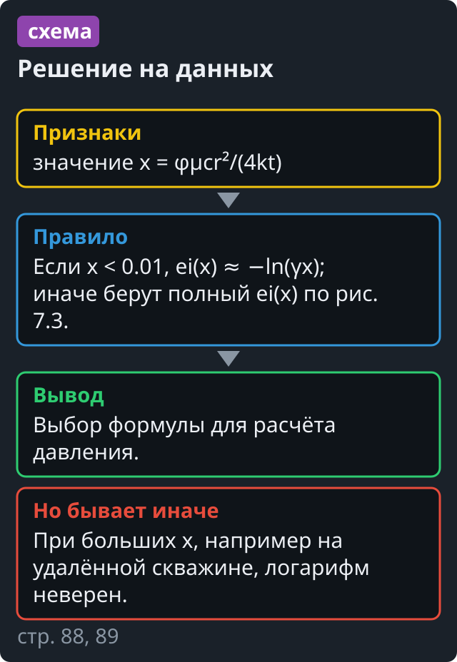

Часть 1 · шаг 1 из 25 · ≈4 мин · формат: интерактив
Главное уравнение притока к скважине
5.1 Introduction: the basic equation for radial flow. Какое уравнение описывает радиальный приток жидкости в однородной пористой среде и что с ним делать дальше.
Почему этот шаг здесь
Глава начинается с итога: какое уравнение будет выведено и почему его нельзя решить сразу. модельстр. 75
Суть
В главе выводится одно уравнение для радиального течения флюида в однородной пористой среде, уравнение (5.1). Оно нелинейное, поэтому перед аналитическим решением его надо линеаризовать. Для жидкости хватает простого приближения, для реального газа нужен более сложный приём. модельстр. 75
Как это работает
Механизм
В этой главе выводится основное уравнение радиального течения флюида в однородной пористой среде. Однородная — значит свойства породы везде одинаковые. Это уравнение (5.1). модельстр. 75
Слева в (5.1) — изменение потока массы по радиусу r. Справа — накопление массы во времени t за счёт сжимаемости c при пористости φ. модельстр. 75
Уравнение нелинейное (non-linear). Коэффициенты в обеих частях сами зависят от искомой величины — давления. модельстр. 75
Чтобы получить аналитические решения, уравнение сначала линеаризуют. Его записывают так, чтобы коэффициенты почти не зависели от давления и их можно было считать постоянными. модельстр. 75
Как делает специалист
Для течения жидкости в конце главы дано приближённое линеаризованное уравнение. Оно сводит (5.1) к радиальному уравнению пьезопроводности (radial diffusivity equation). модельстр. 75
Решения этого уравнения и их применение для течения нефти автор подробно разбирает в главах 6 и 7. модельстр. 75
Для реального газа нужна более сложная линеаризация — интегральным преобразованием. Её автор выносит в главу 8. модельстр. 75
Нюансы
Линеаризация для жидкости — приближённая. Она годится, только если коэффициенты слабо зависят от давления. модельстр. 75
Формулы
Изменение потока массы по радиусу равно скорости накопления массы в породе за счёт сжимаемости. модельстр. 75
r — расстояние от оси скважины
k — проницаемость
ρ — плотность флюида
μ — вязкость флюида
p — давление
φ — пористость
c — сжимаемость (изотермическая)
t — время
Что это значит для данных
Уравнение (5.1) связывает давление p с радиусом r и временем t; коэффициенты зависят от самого давления. модельстр. 75
Без линеаризации простых аналитических решений нет; для газа простое приближение для жидкости не подходит. модельстр. 75
Численный решатель может работать и с нелинейной формой, если пересчитывать коэффициенты на каждом шаге. гипотезамодельстр. 75
Аналогия
Как рекурсивная формула, где параметры функции зависят от её же результата: сначала надо зафиксировать параметры, потом решать. модель
Где аналогия не работает: В коде можно просто итерировать, а аналитику нужна именно постоянная форма коэффициентов.
Линза неэффективности
Входные данныеСвойства породы и флюида: k, φ, μ, c, ρРучные шагиВыбор способа линеаризации под тип флюидаТочки сужденияЖидкость или реальный газВремяВ главе не указаноТипичные ошибкиРешать нелинейное уравнение как линейное
Новые понятия
однородная пористая среда — Порода с порами, свойства которой одинаковы во всех точках
нелинейное уравнение (non-linear) — Уравнение, коэффициенты которого зависят от искомой величины
линеаризация — Запись уравнения так, чтобы коэффициенты можно было считать постоянными
уравнение пьезопроводности (diffusivity equation) — Линеаризованная форма уравнения (5.1) для жидкости
Источник
4 цитаты автора со страницами
наблюдение. В главе выводится основное уравнение радиального течения флюида в однородной пористой среде. пересказ модели
«In this chapter the basic equation for the radial flow of a fluid in a homogeneous porous medium is derived as» — автор, стр. 75
вывод. Уравнение нелинейно, потому что коэффициенты в обеих частях зависят от давления. пересказ модели
«This equation is non-linear since the coefficients on both sides are themselves functions of the dependent variable, the pressure.» — автор, стр. 75
вывод. Для аналитических решений уравнение сначала надо линеаризовать, сделав коэффициенты практически постоянными. пересказ модели
«In order to obtain analytical solutions, it is first necessary to linearize the equation by expressing it in a form in which the coefficients have a negligible dependence upon the pressure and can be considered as constants.» — автор, стр. 75
наблюдение. Для реального газа нужна более сложная линеаризация интегральным преобразованием, она дана в главе 8. пересказ модели
«For the flow of a real gas, however, a more complex linearization by integral transformation is required which will be presented separately in Chapter 8.» — автор, стр. 75
Иллюстрации
Место шага «Главное уравнение притока к скважине» в главе: на что опирается и куда ведёт. класс B · схема
Проверь себя
Часть 2 · шаг 2 из 25 · ≈4 мин · формат: практикум на данных
Почему поток к скважине считают радиальным
5.2 Radial geometry and simplifying assumptions. Почему уравнение выводят в радиальной форме и при каких допущениях.
Почему этот шаг здесь
Перед выводом надо понять, какую геометрию выбрали и какие упрощения приняли. модельстр. 75, 76
Суть
Уравнение выводят в радиальной форме, потому что она моделирует течение вблизи скважины. Её решения нужны для испытания скважин и расчёта притока. Вывод опирается на три упрощающих допущения. модельстр. 75, 76
Как это работает
Механизм
Основное уравнение выводят в радиальной форме. Так моделируется течение флюидов вблизи скважины. модельстр. 75
Геометрия радиальной ячейки показана на рис. 5.1: однофазный флюид течёт к добывающей скважине со всех сторон. модельстр. 75, 76
Сначала принимают допущение а: пласт однороден по всем свойствам породы и изотропен по проницаемости. Изотропен — проницаемость одинакова во всех направлениях. модельстр. 75
Допущение б: добывающая скважина вскрывает всю толщину пласта. Это обеспечивает полностью радиальный поток. модельстр. 75
Допущение в: пласт полностью насыщен одним флюидом. модельстр. 76
Как делает специалист
Аналитические решения радиального уравнения получают при разных граничных и начальных условиях. Их используют для описания испытания скважин (well testing) и притока к скважине (well inflow). модельстр. 75
Автор считает это важнее вывода в декартовых координатах. Аналитические решения в декартовой форме промысловые инженеры используют редко. модельстр. 75
В численном моделировании пласта чаще используют декартову геометрию. Но и там приток в скважину или отток из неё описывают уравнениями в радиальной форме. модельстр. 75
Нюансы
Допущения приняты «initially» — на первом шаге. Они упрощают вывод и не утверждают, что реальный пласт таков. модельстр. 75
Частая ошибка
Флюид течёт к скважине по пустому объёму, а не через поры породы.
Что это значит для данных
Решения радиального уравнения — основа интерпретации испытаний скважин и расчёта притока. модельстр. 75, 76
Если скважина вскрывает не всю толщину или пласт неоднороден, допущения а и б нарушаются. модельстр. 75, 76
Данные испытаний неполностью вскрытых скважин стоит помечать отдельно. гипотезамодельстр. 75, 76
Решение на данных
Признаки
пласт однороден и изотропен
скважина вскрывает всю толщину
пласт насыщен одним флюидом
ПравилоЕсли все три допущения выполняются, течение вблизи скважины можно описывать радиальным уравнением.ВыводПрименимы радиальные решения для испытаний и притока.КонтрпримерСкважина вскрывает часть толщины — поток уже не полностью радиальный.
Аналогия
Как модель сервера, к которому запросы сходятся со всех сторон: удобнее считать по расстоянию до центра, а не по сетке x–y. модель
Где аналогия не работает: Запросы не текут через пористую среду и не сжимаются по дороге.
Линза неэффективности
Входные данныеТолщина пласта, интервал вскрытия, данные о свойствах породыРучные шагиПроверка, выполняются ли допущения а–вТочки сужденияМожно ли считать поток полностью радиальнымВремяВ главе не указаноТипичные ошибкиПрименять формулы к неполностью вскрытому пласту без оговорок
Новые понятия
радиальное течение — Течение к скважине со всех сторон, описываемое расстоянием r до её оси
изотропный по проницаемости — Проницаемость одинакова во всех направлениях
испытание скважины (well testing) — Изучение пласта по изменению давления в скважине
численное моделирование пласта — Расчёт течения в пласте на компьютерной сетке
Источник
6 цитат автора со страницами
наблюдение. Радиальная форма уравнения моделирует течение флюидов вблизи скважины. пересказ модели
«The basic differential equation will be derived in radial form thus simulating the flow of fluids in the vicinity of a well.» — автор, стр. 75
наблюдение. Аналитические решения в декартовых координатах промысловые инженеры используют редко. пересказ модели
«This is considered of greater importance than deriving the basic equation in cartesian coordinates since analytical solutions of the latter are seldom used in practice by field engineers.» — автор, стр. 75
наблюдение. В численном моделировании чаще декартова геометрия, но приток в скважину описывается радиальными уравнениями. пересказ модели
«In numerical reservoir simulation, however, cartesian geometry is more commonly used but even in this case the flow into or out of a well is controlled by equations expressed in radial form such as those presented in the next four chapters.» — автор, стр. 75
допущение. Пласт принят однородным по свойствам породы и изотропным по проницаемости. пересказ модели
«a) The reservoir is considered homogeneous in all rock properties and isotropic with respect to permeability.» — автор, стр. 75
допущение. Скважина вскрывает всю толщину пласта, что даёт полностью радиальный поток. пересказ модели
«b) The producing well is completed across the entire formation thickness thus ensuring fully radial flow.» — автор, стр. 75
допущение. Пласт полностью насыщен одним флюидом. пересказ модели
«c) The formation is completely saturated with a single fluid.» — автор, стр. 76
Иллюстрации
Место шага «Почему поток к скважине считают радиальным» в главе: на что опирается и куда ведёт. класс B · схемаРешение на данных в шаге «Почему поток к скважине считают радиальным»: признаки, правило, вывод. класс B · схема
Проверь себя
Часть 2 · шаг 3 из 25 · ≈3 мин · формат: интерактив
Баланс массы в тонком кольце
Mass conservation in a radial volume element. Как закон сохранения массы для тонкого кольца даёт уравнение (5.2).
Почему этот шаг здесь
Вывод начинается с закона сохранения массы для малого элемента породы. модельстр. 76
Суть
Берут тонкое кольцо толщиной dr на расстоянии r от центра. Разность массового расхода на входе и выходе равна скорости изменения массы в кольце. После упрощения получается уравнение (5.2). модельстр. 76
Как это работает
Механизм
Рассматривают течение через элемент объёма толщиной dr на расстоянии r от центра радиальной ячейки. модельстр. 76
К нему применяют принцип сохранения массы: массовый расход на входе минус расход на выходе равен скорости изменения массы в элементе. модельстр. 76
Массовый расход — это объёмный расход q, умноженный на плотность ρ. Разность qρ на радиусах r+dr и r приравнивают накоплению массы. модельстр. 76
Объём малого элемента толщиной dr равен 2πrhφdr. Здесь h — толщина пласта, φ — пористость. модельстр. 76
Левую часть раскладывают: qρ на радиусе r+dr равно qρ на радиусе r плюс производная ∂(qρ)/∂r, умноженная на dr. модельстр. 76
После сокращения на dr остаётся уравнение (5.2): изменение qρ по радиусу равно 2πrhφ, умноженному на ∂ρ/∂t. модельстр. 76
Нюансы
Накопление массы в элементе идёт через изменение плотности флюида ρ во времени. Объём пор здесь считается постоянным. модельстр. 76
Формулы
Массовый расход на входе минус расход на выходе равен скорости изменения массы в элементе. модельстр. 76
Разность qρ на радиусах r+dr и r равна объёму пор элемента, умноженному на скорость изменения плотности. модельстр. 76
q — объёмный расход
ρ — плотность флюида
r — расстояние от центра
dr — толщина элемента
h — толщина пласта
φ — пористость
t — время
Левая часть разложена: qρ на r+dr заменено на qρ на r плюс производная, умноженная на dr. модельстр. 76
q — объёмный расход
ρ — плотность флюида
r — радиус
dr — толщина элемента
h — толщина пласта
φ — пористость
Изменение массового расхода по радиусу равно 2πrhφ, умноженному на скорость изменения плотности. модельстр. 76
q — объёмный расход
ρ — плотность флюида
r — радиус
h — толщина пласта
φ — пористость
t — время
Что это значит для данных
Уравнение (5.2) — это баланс массы: что вошло и вышло, то накопилось. модельстр. 76
Если в элементе есть источник или сток, этот баланс без дополнительного слагаемого не работает; в главе такого слагаемого нет. модельстр. 76
Проверку баланса массы удобно делать как контрольную сумму в численной модели. гипотезамодельстр. 76
Аналогия
Как баланс очереди: пришло сообщений минус ушло равно росту очереди. модель
Где аналогия не работает: Сообщения не сжимаются, а флюид при росте давления становится плотнее.
Линза неэффективности
Входные данныеГеометрия элемента: r, dr, h, φРучные шагиЗапись баланса и разложение левой частиТочки сужденияКакие члены малы и отбрасываютсяВремяВ главе не указаноТипичные ошибкиПутать объёмный расход q и массовый qρ
Новые понятия
сохранение массы — Масса не исчезает: разность входа и выхода равна накоплению
массовый расход — Объёмный расход q, умноженный на плотность ρ
толщина пласта h — Вертикальная мощность пласта, через которую идёт поток
плотность ρ — Масса в единице объёма, ρ = m/V
Источник
2 цитаты автора со страницами
наблюдение. Вывод начинают с элемента объёма толщиной dr на расстоянии r от центра и закона сохранения массы. пересказ модели
«Consider the flow through a volume element of thickness dr situated at a distance r from the centre of the radial cell.» — автор, стр. 76
наблюдение. Выражение 2πrhφdr — объём малого элемента толщиной dr. пересказ модели
«where is the volume of the small element of thickness dr.» — автор, стр. 76
Иллюстрации
Место шага «Баланс массы в тонком кольце» в главе: на что опирается и куда ведёт. класс B · схема
Проверь себя
Часть 2 · шаг 4 из 25 · ≈2 мин · формат: интерактив
Подставляем закон Дарси
Substituting Darcy's law for radial flow. Как закон Дарси для радиального горизонтального потока превращает (5.2) в (5.3).
Почему этот шаг здесь
В балансе массы неизвестен расход q; закон Дарси выражает его через давление. модельстр. 76
Суть
Закон Дарси для радиального горизонтального течения выражает расход q через градиент давления. После подстановки в (5.2) и деления на 2πrh получается уравнение (5.3) только с давлением и плотностью. модельстр. 76
Как это работает
Механизм
Для радиального горизонтального потока применяют закон Дарси (Darcy's Law). Он позволяет заменить расход q в уравнении (5.2). модельстр. 76
По закону Дарси q равно 2πkhr/μ, умноженному на ∂p/∂r. Здесь k — проницаемость, μ — вязкость флюида. модельстр. 76
Подстановка даёт уравнение: производная по r от (2πkhr/μ)·ρ·∂p/∂r равна 2πrhφ·∂ρ/∂t. модельстр. 76
После деления на 2πrh получается уравнение (5.3): слева (1/r)·∂/∂r(kρ/μ · r · ∂p/∂r), справа φ·∂ρ/∂t. модельстр. 76
Нюансы
Закон Дарси здесь взят для горизонтального потока: влияние силы тяжести в этой форме не учитывается. модельстр. 76
Формулы
Закон Дарси для радиального горизонтального потока: расход пропорционален градиенту давления. модельстр. 76
q — объёмный расход
k — проницаемость
h — толщина пласта
r — радиус
μ — вязкость флюида
p — давление
Баланс массы после подстановки закона Дарси вместо q. модельстр. 76
k — проницаемость
h — толщина пласта
r — радиус
μ — вязкость
ρ — плотность
p — давление
φ — пористость
t — время
Уравнение (5.3): радиальное изменение потока массы равно пористости, умноженной на скорость изменения плотности. модельстр. 76
r — радиус
k — проницаемость
ρ — плотность
μ — вязкость
p — давление
φ — пористость
t — время
Что это значит для данных
После подстановки в уравнении остаются давление p и плотность ρ, расход q исчезает. модельстр. 76
Форма закона Дарси здесь — для горизонтального потока; для наклонного течения она неполна. модельстр. 76
При разных k по пласту коэффициент kρ/μ становится функцией координаты. гипотезамодельстр. 76
Аналогия
Как подстановка формулы пропускной способности канала в баланс трафика: поток выражается через перепад. модель
Где аналогия не работает: В сети перепад не зависит от плотности данных, а здесь коэффициент зависит от давления.
Линза неэффективности
Входные данныеk, μ, hРучные шагиПодстановка и сокращение на 2πrhТочки сужденияМожно ли пренебречь наклоном пластаВремяВ главе не указаноТипичные ошибкиПотерять множитель r при сокращении
Новые понятия
закон Дарси (Darcy's Law) — Связь расхода через пористую среду с градиентом давления
проницаемость k — Способность породы пропускать флюид
вязкость μ — Сопротивление флюида течению
Источник
1 цитата автора со страницами
наблюдение. Закон Дарси для радиального горизонтального потока позволяет заменить расход q в уравнении (5.2). пересказ модели
«By applying Darcy's Law for radial, horizontal flow it is possible to substitute for the flow rate q in equ.» — автор, стр. 76
Иллюстрации
Место шага «Подставляем закон Дарси» в главе: на что опирается и куда ведёт. класс B · схема
Часть 2 · шаг 5 из 25 · ≈2 мин · формат: интерактив
От плотности к давлению через сжимаемость
Isothermal compressibility and the final form (5.1). Как изотермическая сжимаемость переводит производную плотности в производную давления.
Почему этот шаг здесь
В (5.3) справа стоит плотность; чтобы оставить одну неизвестную — давление, нужна сжимаемость. модельстр. 76
Суть
Изотермическая сжимаемость c связывает изменение объёма с давлением. Через ρ = m/V она равна (1/ρ)∂ρ/∂p. Тогда ∂ρ/∂t = cρ∂p/∂t, и (5.3) превращается в итоговое уравнение (5.1). модельстр. 76
Как это работает
Механизм
Производную плотности по времени в (5.3) выражают через производную давления по времени. Для этого берут термодинамическое определение изотермической сжимаемости (isothermal compressibility). модельстр. 76
Сжимаемость c равна минус (1/V)·∂V/∂p: относительное уменьшение объёма при росте давления. модельстр. 76
Плотность ρ равна массе m, делённой на объём V. модельстр. 76
Отсюда сжимаемость можно записать иначе: c = (1/ρ)·∂ρ/∂p. Это уравнение (5.4). модельстр. 76
Дифференцирование по времени даёт уравнение (5.5): cρ·∂p/∂t = ∂ρ/∂t. модельстр. 76
Подстановка (5.5) в (5.3) приводит к итоговому уравнению (5.1): справа стоит φcρ·∂p/∂t. модельстр. 76
Нюансы
Сжимаемость берётся изотермическая — при постоянной температуре. модельстр. 76
Формулы
Сжимаемость — относительное уменьшение объёма при росте давления. модельстр. 76
c — изотермическая сжимаемость
V — объём
p — давление
Плотность равна массе, делённой на объём. модельстр. 76
ρ — плотность
m — масса
V — объём
Уравнение (5.4): сжимаемость через плотность — относительный рост плотности при росте давления. модельстр. 76
c — изотермическая сжимаемость
ρ — плотность
m — масса
p — давление
Уравнение (5.5): скорость изменения плотности равна cρ, умноженному на скорость изменения давления. модельстр. 76
c — сжимаемость
ρ — плотность
p — давление
t — время
Итоговое уравнение (5.1) радиального течения однофазного флюида. модельстр. 76
r — радиус
k — проницаемость
ρ — плотность
μ — вязкость
p — давление
φ — пористость
c — сжимаемость
t — время
Что это значит для данных
После этого шага в уравнении одна неизвестная — давление p. модельстр. 76
Сжимаемость c и плотность ρ сами зависят от давления, поэтому уравнение остаётся нелинейным. модельстр. 76
Таблицы PVT по давлению можно использовать для оценки c при каждом давлении. гипотезамодельстр. 76
Аналогия
Как перевод единиц: вместо скорости роста плотности пишем скорость роста давления с коэффициентом пересчёта. модель
Где аналогия не работает: Коэффициент пересчёта cρ сам меняется с давлением.
Линза неэффективности
Входные данныеСжимаемость флюида c, плотность ρРучные шагиВывод (5.4) и (5.5)Точки сужденияИзотермичен ли процессВремяВ главе не указаноТипичные ошибкиПерепутать знак в определении сжимаемости
Новые понятия
изотермическая сжимаемость (isothermal compressibility) — Относительное изменение объёма при изменении давления при постоянной температуре
Источник
2 цитаты автора со страницами
наблюдение. Производную плотности по времени выражают через производную давления, используя определение изотермической сжимаемости. пересказ модели
«The time derivative of the density appearing on the right hand side of equ.» — автор, стр. 76
вывод. Подстановка (5.5) в (5.3) даёт итоговое уравнение (5.1). пересказ модели
«Finally, substituting equ. (5.5) in equ. (5.3) reduces the latter to» — автор, стр. 76
Иллюстрации
Место шага «От плотности к давлению через сжимаемость» в главе: на что опирается и куда ведёт. класс B · схема
Проверь себя
Часть 2 · шаг 6 из 25 · ≈3 мин · формат: практикум на данных
Почему уравнение надо упрощать
Why equation (5.1) is non-linear. Почему (5.1) нелинейно и какие способы линеаризации обещаны дальше.
Почему этот шаг здесь
Итоговое уравнение получено; теперь видно, какие его коэффициенты мешают решить его просто. модельстр. 76
Суть
Уравнение (5.1) — основное уравнение для радиального течения любого однофазного флюида в пористой среде. Оно нелинейно: плотность, сжимаемость и вязкость в коэффициентах kρ/μ и φcρ неявно зависят от давления. Простых аналитических решений без линеаризации нет. модельстр. 76
Как это работает
Механизм
Уравнение (5.1) — основное дифференциальное уравнение в частных производных для радиального течения любого однофазного флюида в пористой среде. модельстр. 76
Его называют нелинейным из-за неявной зависимости от давления плотности, сжимаемости и вязкости. Они входят в коэффициенты kρ/μ и φcρ. модельстр. 76
Поэтому простые аналитические решения нельзя найти без линеаризации. Коэффициенты должны так или иначе потерять зависимость от давления. модельстр. 76
Как делает специалист
Простая линеаризация подходит для жидкостей с малой и постоянной сжимаемостью — недонасыщенной нефти (under-saturated oil). Её автор рассматривает в разделе 5.4. модельстр. 76
Для реального газа нужен более строгий метод — интегральное преобразование Кирхгофа (Kirchhoff integral transformation). Он дан в главе 8. модельстр. 76
Нюансы
Простая линеаризация опирается на условие: сжимаемость жидкости малая и постоянная. Если это не так, как у газа, нужен другой метод. модельстр. 76
Что это значит для данных
Коэффициенты kρ/μ и φcρ зависят от давления через ρ, c и μ. модельстр. 76
Для газа простая линеаризация не годится: его сжимаемость не мала и не постоянна. модельстр. 76
Метку типа флюида стоит хранить вместе с данными испытания, чтобы выбрать метод решения. гипотезамодельстр. 76
Решение на данных
Признаки
флюид — жидкость
сжимаемость малая и постоянная
ПравилоЕсли оба признака выполняются, применяют простую линеаризацию раздела 5.4.ВыводУравнение сводится к уравнению пьезопроводности.КонтрпримерРеальный газ: нужна линеаризация преобразованием Кирхгофа (глава 8).
Аналогия
Как оценка сложности алгоритма: при малом и постоянном коэффициенте его можно вынести за скобки. модель
Где аналогия не работает: Если коэффициент сильно меняется, вынести его нельзя и нужна другая техника.
Линза неэффективности
Входные данныеТип флюида, его сжимаемостьРучные шагиВыбор метода линеаризацииТочки сужденияМала ли и постоянна ли сжимаемостьВремяВ главе не указаноТипичные ошибкиПрименять линеаризацию для жидкости к газу
Новые понятия
недонасыщенная нефть (under-saturated oil) — Нефть, в которой при данном давлении весь газ растворён
преобразование Кирхгофа — Интегральный приём линеаризации для реального газа, глава 8
интегральное преобразование — Приём линеаризации для систем с высокой сжимаемостью, например газа
Источник
3 цитаты автора со страницами
наблюдение. Уравнение (5.1) — основное уравнение для радиального течения любого однофазного флюида в пористой среде. пересказ модели
«This is the basic, partial differential equation for the radial flow of any single phase fluid in a porous medium.» — автор, стр. 76
вывод. Нелинейность вызвана неявной зависимостью плотности, сжимаемости и вязкости от давления. пересказ модели
«The equation is referred to as non-linear because of the implicit pressure dependence of the density, compressibility and viscosity appearing in the coefficients and .» — автор, стр. 76
наблюдение. Простая линеаризация применима к жидкостям малой и постоянной сжимаемости, а для реального газа нужен метод Кирхгофа. пересказ модели
«A simple form of linearization applicable to the flow of liquids of small and constant compressibility (under-saturated oil) will be considered in sec. 5.4, while a more rigorous method, using the Kirchhoff integral transformation, will be presented in Chapter 8 for the more complex case of linearization for the flow of a real gas.» — автор, стр. 76
Иллюстрации
Место шага «Почему уравнение надо упрощать» в главе: на что опирается и куда ведёт. класс B · схемаРешение на данных в шаге «Почему уравнение надо упрощать»: признаки, правило, вывод. класс B · схема
Проверь себя
Часть 3 · шаг 7 из 25 · ≈3 мин · формат: интерактив
Скважина работает с постоянным дебитом
5.3 Conditions of solution: the constant terminal rate solution. Какое решение уравнения (5.1) самое полезное и при каких трёх условиях его ищут.
Почему этот шаг здесь
Уравнение получено; чтобы его решить, нужно задать начальные и граничные условия. модельстр. 76
Суть
У уравнения (5.1) бесконечно много решений: всё зависит от начальных и граничных условий. Самое распространённое и полезное — решение при постоянном дебите на забое (constant terminal rate solution). Его ищут при трёх условиях: неустановившемся, псевдоустановившемся и установившемся. модельстр. 76
Как это работает
Механизм
В принципе уравнение (5.1) имеет бесконечное число решений. Каждое зависит от наложенных начальных и граничных условий. модельстр. 76
Самое распространённое и полезное — решение при постоянном дебите на забое (constant terminal rate solution). модельстр. 76
Его начальное условие: в некоторый момент пласт находится при равновесном давлении pi. С этого момента скважина работает с постоянным дебитом q на стенке скважины, r = rw. модельстр. 76
Как делает специалист
Подробно это решение автор разбирает в главах 7 и 8. Здесь он описывает три самых распространённых, но не единственных условия, при которых его ищут. модельстр. 76
Эти условия — неустановившееся (transient), псевдоустановившееся (semi steady state) и установившееся (steady state). Каждое применимо в своё время после начала добычи и при своих принятых граничных условиях. модельстр. 76
Нюансы
Три условия — самые распространённые, но «not exclusive»: возможны и другие. модельстр. 76
Что это значит для данных
Решение задаётся парой: начальное давление pi и постоянный дебит q на радиусе скважины rw. модельстр. 76
Если дебит не постоянен, это решение напрямую не применимо. модельстр. 76
Записи дебита стоит проверять на постоянство перед выбором модели. гипотезамодельстр. 76
Аналогия
Как нагрузочный тест: подаём на сервер постоянный поток запросов и смотрим, как меняется отклик. модель
Где аналогия не работает: Сервер не «помнит» прошлую нагрузку так, как пласт помнит давление.
Линза неэффективности
Входные данныеНачальное давление p_i, дебит q, радиус скважины r_wРучные шагиВыбор начальных и граничных условийТочки сужденияКакое из трёх условий подходит к данному моментуВремяВ главе не указаноТипичные ошибкиСчитать, что условий только три
Новые понятия
решение при постоянном дебите (constant terminal rate solution) — Решение уравнения, когда скважина работает с постоянным дебитом на забое
начальные и граничные условия — Состояние пласта в начале и условия на его краях
равновесное давление p_i — Начальное давление пласта до начала добычи
радиус скважины r_w — Расстояние от оси до стенки скважины
Источник
3 цитаты автора со страницами
наблюдение. Уравнение (5.1) имеет бесконечное число решений в зависимости от начальных и граничных условий. пересказ модели
«In principle, an infinite number of solutions of equ.» — автор, стр. 76
наблюдение. Самое полезное — решение при постоянном дебите на забое: в некоторый момент пласт при равновесном давлении, и с него скважина работает с постоянным дебитом. пересказ модели
«The most common and useful of these is called the constant terminal rate solution for which the initial condition is that at some fixed time, at which the reservoir is at equilibrium pressure , the well is produced at a constant rate q at the wellbore, .» — автор, стр. 76
наблюдение. Неустановившееся, псевдоустановившееся и установившееся условия применимы в разное время после начала добычи и при разных границах. пересказ модели
«These conditions are called transient, semi steady state and steady state and are each applicable at different times after the start of production and for different, assumed boundary conditions.» — автор, стр. 76
Иллюстрации
Место шага «Скважина работает с постоянным дебитом» в главе: на что опирается и куда ведёт. класс B · схема
Часть 3 · шаг 8 из 25 · ≈4 мин · формат: ролик-разбор
Первые часы: пласт кажется бесконечным
a) Transient condition. Когда применимо неустановившееся условие и почему пласт тогда считают бесконечным.
Почему этот шаг здесь
Первое по времени из трёх условий — сразу после изменения дебита. модельстр. 77
Суть
Неустановившееся условие действует короткое время после возмущения давления в пласте. Пока отклик давления не дошёл до внешней границы, пласт ведёт себя как бесконечный. На этом построен анализ испытаний скважин. модельстр. 77
Как это работает
Механизм
Неустановившееся условие (transient condition) применимо только относительно короткое время после того, как в пласте создано возмущение давления. модельстр. 77
В радиальной модели такое возмущение обычно вызывают изменением дебита скважины на r = rw. модельстр. 77
Пока условие действует, считается, что внешняя граница не влияет на отклик давления. Поэтому пласт выглядит бесконечным. модельстр. 77
Это даёт сложное решение уравнения (5.1). И давление, и его производная по времени — функции и положения r, и времени t. модельстр. 77
Как делает специалист
Условие применяют в основном к анализу испытаний скважин. Дебит намеренно меняют и измеряют отклик давления в скважине. модельстр. 77
Отклик анализируют в течение короткого периода — нескольких часов после смены дебита. Если пласт не очень мал, влияние границ за это время не почувствуется. модельстр. 77
Методы неустановившегося анализа для нефтяных и газовых скважин автор описывает в главах 7 и 8 соответственно. модельстр. 77
Нюансы
Оговорка автора: пласт математически бесконечен, если он не очень мал (unless the reservoir is extremely small). В очень малом пласте граница скажется раньше. модельстр. 77
Бесконечность здесь — математическое допущение на короткое время, а не свойство пласта. модельстр. 77
Формулы
В неустановившемся решении давление — функция положения и времени. модельстр. 77
p — давление
g — функция положения и времени
r — радиус
t — время
Производная давления по времени тоже функция положения и времени. модельстр. 77
p — давление
t — время
f — функция положения и времени
r — радиус
Частая ошибка
Давление расходится по пласту с постоянной скоростью и сразу доходит до границы.
Что это значит для данных
В испытании измеряют давление в скважине после намеренной смены дебита; свойства пласта получают анализом этого отклика. модельстр. 77
Если пласт очень мал, граница скажется уже в окне испытания, и допущение бесконечного пласта нарушится. модельстр. 77
Отклонение поздних точек от бесконечной модели может указывать на влияние границы. гипотезамодельстр. 77
Решение на данных
Признаки
прошло короткое время после смены дебита
пласт не очень мал
ПравилоЕсли оба признака выполняются, граница не влияет на отклик и пласт можно считать бесконечным.ВыводПрименим неустановившийся анализ испытания.КонтрпримерОчень малый пласт: граница скажется в окне испытания.
Аналогия
Как пинг в большой сети: пока ответ не вернулся от края, сеть кажется бесконечной. модель
Где аналогия не работает: Возмущение давления не отражается, как сигнал, а расплывается диффузией.
Линза неэффективности
Входные данныеЗапись давления в скважине и история дебитаРучные шагиСмена дебита и регистрация отклика несколько часовТочки сужденияПочувствовалась ли граница в окне испытанияВремяНесколько часов после смены дебитаТипичные ошибкиПрименять модель бесконечного пласта к очень малому пласту
Новые понятия
неустановившееся условие (transient) — Короткий период после возмущения, когда граница пласта ещё не сказывается
возмущение давления — Изменение давления, созданное, например, сменой дебита
внешняя граница r_e — Край области, из которой скважина отбирает флюид
Источник
5 цитат автора со страницами
наблюдение. Неустановившееся условие применимо только короткое время после некоторого возмущения давления в пласте. пересказ модели
«This condition is only applicable for a relatively short period after some pressure disturbance has been created in the reservoir.» — автор, стр. 77
наблюдение. Возмущение обычно создают изменением дебита скважины. пересказ модели
«In terms of the radial flow model this disturbance would be typically caused by altering the well's production rate at .» — автор, стр. 77
допущение. Пока действует условие, внешняя граница не влияет на отклик, и пласт выглядит бесконечным. пересказ модели
«In the time for which the transient condition is applicable it is assumed that the pressure response in the reservoir is not affected by the presence of the outer boundary, thus the reservoir appears infinite in extent.» — автор, стр. 77
вывод. Если пласт не очень мал, за несколько часов испытания граница не скажется и пласт математически бесконечен. пересказ модели
«Then, unless the reservoir is extremely small, the boundary effects will not be felt and the reservoir is, mathematically, infinite.» — автор, стр. 77
наблюдение. В неустановившемся решении давление и его производная по времени зависят и от положения, и от времени. пересказ модели
«This gives rise to a complex solution of equ.» — автор, стр. 77
Иллюстрации
Место шага «Первые часы: пласт кажется бесконечным» в главе: на что опирается и куда ведёт. класс B · схемаРешение на данных в шаге «Первые часы: пласт кажется бесконечным»: признаки, правило, вывод. класс B · схемаАнимация: после смены дебита воронка давления расходится от скважины, а до далёкой границы ещё не дошла. 21 с, без звука. класс B · симуляция · стр. 77; допущения: пьезопроводность 1 м²/с условная; масштаб давления условный, показана форма решения линейного источника (7.6)
Проверь себя
Часть 3 · шаг 9 из 25 · ≈4 мин · формат: ролик-шортс
Закрытая граница: давление падает равномерно
b) Semi Steady State condition. Что происходит, когда граница пласта закрыта и уже почувствовалась.
Почему этот шаг здесь
После неустановившегося периода у закрытого пласта наступает следующее условие. модельстр. 77
Суть
Псевдоустановившееся условие наступает, когда скважина работает достаточно долго и внешняя граница уже сказалась. Граница непроницаема, поэтому градиент давления на ней равен нулю. При постоянном дебите давление падает везде с почти одинаковой скоростью, её даёт материальный баланс. модельстр. 77
Как это работает
Механизм
Условие применимо к пласту, который добывает достаточно долго, чтобы влияние внешней границы уже почувствовалось. Ситуация показана на рис. 5.2. модельстр. 77
Считают, что скважина окружена на внешней границе сплошной «кирпичной стеной». Она не пускает флюид в радиальную ячейку. модельстр. 77
По закону Дарси на внешней границе r = re градиент давления ∂p/∂r равен нулю — уравнение (5.6). модельстр. 77
Если скважина работает с постоянным дебитом, давление в ячейке падает так, что ∂p/∂t примерно постоянно для всех r и t — уравнение (5.7). модельстр. 77
Эту постоянную получают из простого материального баланса по определению сжимаемости: cV·dp/dt = −dV/dt = −q — уравнение (5.8). модельстр. 77
Отсюда dp/dt = −q/(cV) — уравнение (5.9). Для дренирования радиальной ячейки объём пор V = πr_e²hφ, и dp/dt = −q/(cπr_e²hφ) — уравнение (5.10). модельстр. 77
Как делает специалист
Это условие автор применяет в главе 6 для нефти и в главе 8 для газа. Из него выводят уравнения притока к скважине в псевдоустановившемся режиме. модельстр. 77
Нюансы
Для газа условие применяют, хотя сжимаемость газа не постоянна. модельстр. 77
Постоянство ∂p/∂t — приближённое (≈), а не точное. модельстр. 77
Формулы
Уравнение (5.6): на непроницаемой внешней границе градиент давления по радиусу равен нулю. модельстр. 77
p — давление
r — радиус
re — радиус внешней границы
Уравнение (5.7): скорость изменения давления примерно постоянна для всех r и t. модельстр. 77
p — давление
t — время
r — радиус
Уравнение (5.8): материальный баланс — сжатие объёма пор при падении давления равно отбору q. модельстр. 77
c — сжимаемость
V — объём пор
p — давление
t — время
q — дебит
Уравнение (5.9): скорость падения давления равна дебиту, делённому на cV. модельстр. 77
p — давление
t — время
q — дебит
c — сжимаемость
V — объём пор
Уравнение (5.10): то же для радиальной ячейки с объёмом пор πr_e²hφ. модельстр. 77
p — давление
t — время
q — дебит
c — сжимаемость
re — радиус внешней границы
h — толщина пласта
φ — пористость
Что это значит для данных
Скорость падения давления dp/dt = −q/(cV) связывает дебит с объёмом пор, который дренирует скважина. модельстр. 77
Для газа сжимаемость не постоянна, поэтому (5.9) — приближение. модельстр. 77
По наклону давления во времени при постоянном дебите можно оценить дренируемый объём, если известна c. гипотезамодельстр. 77
Аналогия
Как бак с закрытыми стенками и одним краном: при постоянном расходе уровень падает с постоянной скоростью. модель
Где аналогия не работает: Уровень в баке ровный, а давление в пласте по радиусу разное — одинакова только скорость его падения.
Линза неэффективности
Входные данныеДебит q, сжимаемость c, r_e, h, φРучные шагиРасчёт dp/dt по материальному балансуТочки сужденияНаступил ли уже псевдоустановившийся режимВремяВ главе не указаноТипичные ошибкиПрименять формулу до того, как граница почувствовалась
Новые понятия
псевдоустановившееся условие (semi steady state) — Режим, когда граница закрыта и давление везде падает с почти одинаковой скоростью
непроницаемая граница (no-flow boundary) — Граница, через которую флюид не течёт: ∂p/∂r = 0
материальный баланс — Учёт: сколько флюида отобрали и как от этого изменилось давление
градиент давления ∂p/∂r — Скорость изменения давления с расстоянием от скважины
Источник
5 цитат автора со страницами
наблюдение. Псевдоустановившееся условие применимо, когда пласт добывает достаточно долго и влияние внешней границы уже почувствовалось. пересказ модели
«This condition is applicable to a reservoir which has been producing for a sufficient period of time so that the effect of the outer boundary has been felt.» — автор, стр. 77
допущение. Скважину считают окружённой непроницаемой «кирпичной стеной» на внешней границе. пересказ модели
«It is considered that the well is surrounded, at its outer boundary, by a solid "brick wall" which prevents the flow of fluids into the radial cell.» — автор, стр. 77
вывод. При постоянном дебите давление в ячейке падает так, что его производная по времени примерно постоянна. пересказ модели
«Furthermore, if the well is producing at a constant flow rate then the cell pressure will decline in such a way that» — автор, стр. 77
вывод. Постоянную скорость падения давления дают материальный баланс и определение сжимаемости. пересказ модели
«The constant referred to in equ. (5.7) can be obtained from a simple material balance using the compressibility definition, thus» — автор, стр. 77
наблюдение. Условие применяют и для газа, хотя его сжимаемость не постоянна. пересказ модели
«This is a condition which will be applied in Chapter 6, for oil flow, and in Chapter 8, for gas flow, to derive the well inflow equations under semi steady state conditions, even though in the latter case the gas compressibility is not constant.» — автор, стр. 77
Иллюстрации
Место шага «Закрытая граница: давление падает равномерно» в главе: на что опирается и куда ведёт. класс B · схемаАнимация: в закрытой ячейке профиль давления опускается целиком, сохраняя форму, а на границе остаётся пологим. 18 с, без звука. класс B · схема · стр. 77; допущения: радиус ячейки принят за 1, скважина у левого края; давление и время условные; профиль — форма псевдоустановившегося режима
Проверь себя
Часть 3 · шаг 10 из 25 · ≈5 мин · формат: ролик-разбор
Среднее давление пласта по дебитам
Drainage boundaries and volume averaged reservoir pressure. Почему каждая скважина дренирует свою область и как по дебитам найти среднее давление пласта.
Почему этот шаг здесь
Псевдоустановившийся режим даёт практический способ найти среднее давление всего пласта. модельстр. 77, 78
Суть
В псевдоустановившемся режиме каждая скважина дренирует свою область за непроницаемой границей, независимо от других. Среднее давление пласта — среднее давлений областей, взвешенное по объёмам пор. Если сжимаемость меняется мало, объёмы можно заменить измеряемыми дебитами. модельстр. 77, 78
Как это работает
Механизм
Важную особенность этого режима для пласта на истощении отметили Мэтьюз, Бронс и Хазебрук (рис. 5.3). Каждая скважина дренирует свою область внутри собственной непроницаемой границы, независимо от других скважин. модельстр. 77, 78
Для этого dp/dt должно быть примерно постоянным во всём пласте. Иначе поток пересекал бы границы, и они смещались бы, пока не установится стабильность. модельстр. 77
Тогда среднее по объёму давление пласта — сумма средних давлений областей p̄_i, взвешенных по объёмам пор Vi, делённая на сумму Vi — уравнение (5.11). модельстр. 77
Из уравнения (5.9) следует: раз dp/dt постоянно для пласта, то при малом изменении сжимаемости дебит области qi пропорционален её объёму Vi — уравнение (5.12). модельстр. 77, 78
Поэтому среднее по объёму в (5.11) можно заменить средним по дебитам — уравнение (5.13). модельстр. 78
Как делает специалист
Объёмы Vi на практике определить трудно. Дебиты qi измеряют регулярно в течение всей жизни месторождения, и это упрощает расчёт среднего давления. модельстр. 78
Среднее давление пласта — это давление, при котором оценивают материальный баланс пласта. модельстр. 78
Как определить средние давления отдельных областей p̄_i, автор подробно описывает в главе 7, раздел 7. модельстр. 78
Нюансы
Замена объёмов на дебиты верна, если изменение сжимаемости мало (if the variation in the compressibility is small). модельстр. 77
Границы областей устойчивы, только пока dp/dt примерно одинаково по пласту; иначе они смещаются. модельстр. 77
Формулы
Уравнение (5.11): среднее давление пласта — среднее давлений областей, взвешенное по объёмам пор. модельстр. 77
p̄_res — среднее по объёму давление пласта
p̄_i — среднее давление в i-й области дренирования
Vi — объём пор i-й области дренирования
Уравнение (5.12): дебит области пропорционален её объёму пор. модельстр. 78
qi — дебит i-й скважины
Vi — объём пор i-й области
Уравнение (5.13): среднее давление пласта — среднее давлений областей, взвешенное по дебитам. модельстр. 78
p̄_res — среднее давление пласта
p̄_i — среднее давление i-й области
qi — дебит i-й скважины
Что это значит для данных
Регулярно измеряемые дебиты скважин и средние давления областей дают среднее давление пласта по (5.13). модельстр. 77, 78
Если сжимаемость меняется заметно, пропорциональность qi и Vi нарушается, и среднее по дебитам искажается. модельстр. 77, 78
Сравнение среднего по дебитам с материальным балансом может выявлять скважины с нестабильной границей. гипотезамодельстр. 77, 78
Решение на данных
Признаки
пласт в псевдоустановившемся режиме
изменение сжимаемости мало
дебиты скважин измерены
ПравилоЕсли признаки выполняются, объёмы областей можно заменить дебитами в среднем давлении.ВыводСреднее давление пласта считают как среднее p̄_i, взвешенное по q_i.КонтрпримерЕсли dp/dt не постоянно по пласту, границы смещаются и дебиты не пропорциональны объёмам.
Аналогия
Как средняя загрузка кластера, взвешенная по трафику: трафик измерять легче, чем ёмкость каждого узла. модель
Где аналогия не работает: Трафик пропорционален ёмкости только в стабильном режиме и при малом изменении сжимаемости.
Линза неэффективности
Входные данныеДебиты скважин q_i, средние давления областей p̄_iРучные шагиВзвешивание давлений по дебитамТочки сужденияМало ли меняется сжимаемость, установился ли режимВремяВ главе не указаноТипичные ошибкиВзвешивать по дебитам, когда режим ещё неустановившийся
Новые понятия
область дренирования — Часть пласта, из которой отбирает флюид одна скважина
среднее давление пласта — Давление, усреднённое по объёму пор всех областей дренирования
пласт на истощении (depletion type reservoir) — Пласт, давление в котором падает из-за отбора без подпитки
Источник
4 цитаты автора со страницами
наблюдение. В псевдоустановившемся режиме каждая скважина дренирует свою область внутри собственной границы, через которую нет потока, отдельно от других скважин. пересказ модели
«This is the fact that, once the reservoir is producing under the semi steady state condition, each well will drain from within its own no-flow boundary quite independently of the other wells.» — автор, стр. 77
вывод. dp/dt должно быть примерно постоянным во всём пласте, иначе поток пересекал бы границы и они смещались бы до стабилизации. пересказ модели
«For this condition dp/dt must be approximately constant throughout the entire reservoir otherwise flow would occur across the boundaries causing a re-adjustment in their positions until stability was eventually achieved.» — автор, стр. 77
вывод. Если изменение сжимаемости мало, дебит области пропорционален её объёму пор. пересказ модели
«Equation (5.9) implies that since dp/dt is constant for the reservoir then, if the variation in the compressibility is small» — автор, стр. 77
наблюдение. Объёмы областей трудно определить, а дебиты измеряют регулярно, поэтому среднее давление считают по дебитам. пересказ модели
«and, whereas the 's are difficult to determine in practice, the 's are measured on a routine basis throughout the lifetime of the field thus facilitating the calculation of , which is the pressure at which the reservoir material balance is evaluated.» — автор, стр. 78
Иллюстрации
Место шага «Среднее давление пласта по дебитам» в главе: на что опирается и куда ведёт. класс B · схемаРешение на данных в шаге «Среднее давление пласта по дебитам»: признаки, правило, вывод. класс B · схемаАнимация: три скважины, у каждой своя область дренирования за границей без потока; среднее давление считают по дебитам. 21 с, без звука. класс B · схема · стр. 77, 78; допущения: размеры пласта, форма областей и расстановка скважин условные; показано только взаимное положение
Проверь себя
Часть 3 · шаг 11 из 25 · ≈3 мин · формат: интерактив
Открытая граница: давление не меняется
c) Steady State condition. Когда давление на границе постоянно и не меняется во времени.
Почему этот шаг здесь
Третье условие — для пласта, где отбор возмещается притоком через границу. модельстр. 78
Суть
Установившееся условие действует после неустановившегося периода, если внешняя граница полностью открыта. Отбор из ячейки точно уравновешен притоком через границу. Давление на границе постоянно, а во времени не меняется нигде. модельстр. 78
Как это работает
Механизм
Установившееся условие (steady state) применимо после неустановившегося периода к скважине, которая дренирует ячейку с полностью открытой внешней границей. Ситуация показана на рис. 5.4. модельстр. 78
Принимают, что при постоянном дебите отбор флюида точно уравновешен притоком через открытую границу. модельстр. 78
Поэтому на границе r = re давление постоянно и равно pe — уравнение (5.14). Производная давления по времени равна нулю для всех r и t — уравнение (5.15). модельстр. 78
Как делает специалист
Условие подходит, когда давление в пласте поддерживается естественным притоком воды или закачкой вытесняющего флюида. Автор отсылает к главе 10. модельстр. 78
Нюансы
Баланс отбора и притока — допущение («It is assumed»), а не наблюдение. модельстр. 78
Формулы
Уравнение (5.14): давление на внешней границе постоянно и равно pe. модельстр. 78
p — давление
pe — давление на внешней границе
r — радиус
re — радиус внешней границы
Уравнение (5.15): давление нигде не меняется во времени. модельстр. 78
p — давление
t — время
r — радиус
Что это значит для данных
При поддержании давления давление на границе pe постоянно, и замеры давления не падают со временем. модельстр. 78
Если поддержка давления слабая, условие (5.15) не выполняется. модельстр. 78
Стабильное давление при постоянном дебите может служить признаком поддержки пласта. гипотезамодельстр. 78
Аналогия
Как бак с краном и подпиткой, которая доливает ровно столько, сколько уходит. модель
Где аналогия не работает: В пласте подпитка идёт через всю границу и зависит от притока воды или закачки.
Линза неэффективности
Входные данныеДавление на границе p_e, дебит, данные о закачке или притоке водыРучные шагиПроверка постоянства давленияТочки сужденияДостаточна ли поддержка давленияВремяВ главе не указаноТипичные ошибкиСчитать режим установившимся без поддержки давления
Новые понятия
установившееся условие (steady state) — Режим, когда давление нигде не меняется во времени
открытая граница — Граница, через которую флюид входит в область дренирования
поддержание давления — Возмещение отбора притоком воды или закачкой
Источник
3 цитаты автора со страницами
наблюдение. Установившееся условие применимо после неустановившегося периода к ячейке с полностью открытой внешней границей. пересказ модели
«The steady state condition applies, after the transient period, to a well draining a cell which has a completely open outer boundary.» — автор, стр. 78
допущение. Принимают, что при постоянном дебите отбор точно уравновешен притоком через открытую границу. пересказ модели
«It is assumed that, for a constant rate of production, fluid withdrawal from the cell will be exactly balanced by fluid entry across the open boundary and therefore,» — автор, стр. 78
наблюдение. Условие подходит, когда давление поддерживается естественным притоком воды или закачкой какого-либо вытесняющего флюида. пересказ модели
«This condition is appropriate when pressure is being maintained in the reservoir due to either natural water influx or the injection of some displacing fluid (refer Chapter 10).» — автор, стр. 78
Иллюстрации
Место шага «Открытая граница: давление не меняется» в главе: на что опирается и куда ведёт. класс B · схема
Проверь себя
Часть 3 · шаг 12 из 25 · ≈3 мин · формат: практикум на данных
Идеальные режимы и реальный пласт
How the conditions are realised in the field. Насколько псевдоустановившееся и установившееся условия выполняются в реальном пласте.
Почему этот шаг здесь
После трёх идеальных условий автор оговаривает, насколько они выполняются на практике. модельстр. 78
Суть
Псевдоустановившееся и установившееся условия могут никогда не выполняться в пласте полностью. Но их часто приближённо достигают, потому что добычу и закачку обычно ведут с постоянным дебитом. После смены дебита скважины наступает короткий неустановившийся период, затем снова стабильный режим. модельстр. 78
Как это работает
Механизм
Псевдоустановившееся и установившееся условия могут никогда не реализоваться в пласте полностью. модельстр. 78
Например, уравнения псевдоустановившегося режима часто применяют, когда дебит и положение непроницаемой границы медленно меняются во времени. модельстр. 78
Тем не менее условия (5.7) и (5.15) часто приближённо выполняются на промысле. Добывающее и нагнетательное оборудование обычно рассчитано на работу с постоянным дебитом, и менять его без нужды нет смысла. модельстр. 78
Как делает специалист
Дебит скважины меняют, например, при остановке на ремонт или при увеличении дебита для более равномерного отбора по пласту. модельстр. 78
После такой смены наступает короткий период неустановившегося течения. Затем устанавливается стабильный режим для нового распределения дебитов. модельстр. 78
Нюансы
Слова автора «may never be fully realised» и «frequently approximated» — оба верны одновременно: полностью условия не выполняются, приближённо — часто. модельстр. 78
Частая ошибка
Модель режима течения точно описывает то, что происходит в пласте.
Что это значит для данных
В истории дебитов смены режима (ремонт, увеличение дебита) отмечают начало короткого неустановившегося периода. модельстр. 78
Сразу после смены дебита формулы стабильного режима не применимы. модельстр. 78
Интервалы после смены дебита стоит исключать при расчёте среднего давления по дебитам. гипотезамодельстр. 78
Аналогия
Как система после перезапуска сервиса: короткий переходный процесс, потом новый стабильный уровень нагрузки. модель
Где аналогия не работает: Переходный процесс в пласте определяется диффузией давления, а не прогревом кэша.
Линза неэффективности
Входные данныеИстория дебитов и остановок скважинРучные шагиОтметка смен режима и периодов стабилизацииТочки сужденияДостаточно ли стабилен дебит для формул стабильного режимаВремяВ главе не указаноТипичные ошибкиСчитать идеальный режим точно выполненным
Новые понятия
стабилизированное течение — Режим после переходного периода: псевдоустановившийся или установившийся
Источник
4 цитаты автора со страницами
наблюдение. Псевдоустановившееся и установившееся условия могут никогда не выполняться в пласте полностью. пересказ модели
«It should be noted that the semi steady state and steady state conditions may never be fully realised in the reservoir.» — автор, стр. 78
наблюдение. Уравнения псевдоустановившегося режима часто применяют, когда дебит и положение границы без потока медленно меняются во времени. пересказ модели
«For instance, semi steady state flow equations are frequently applied when the rate, and consequently the position of the no-flow boundary surrounding a well, are slowly varying functions of time.» — автор, стр. 78
вывод. Условия часто приближённо выполняются, так как оборудование обычно рассчитано на постоянный дебит. пересказ модели
«Nevertheless, the defining conditions specified by equ.» — автор, стр. 78
наблюдение. После смены дебита скважины бывает короткий неустановившийся период, а затем стабильный режим. пересказ модели
«If the production rate of an individual well is changed, for instance, due to closure for repair or increasing the rate to obtain a more even fluid withdrawal pattern throughout the reservoir, there will be a brief period when transient flow conditions prevail followed by stabilized flow for the new distribution of individual well rates.» — автор, стр. 78
Иллюстрации
Место шага «Идеальные режимы и реальный пласт» в главе: на что опирается и куда ведёт. класс B · схема
Проверь себя
Часть 4 · шаг 13 из 25 · ≈3 мин · формат: интерактив
Раскрываем скобки в уравнении
5.4 Expanding equation (5.1) for a liquid. Как раскрытие левой части (5.1) по правилу дифференцирования произведения даёт уравнение (5.18).
Почему этот шаг здесь
Чтобы линеаризовать уравнение, сначала надо увидеть все его слагаемые по отдельности. модельстр. 78
Суть
Простая линеаризация получается отбрасыванием части слагаемых при допущениях о природе флюида. Здесь флюид — жидкость, на практике это недонасыщенная нефть. Левую часть (5.1) раскрывают по цепному правилу и заменяют производную плотности через сжимаемость — так получается (5.18). модельстр. 78
Как это работает
Механизм
Простую линеаризацию уравнения (5.1) получают отбрасыванием некоторых слагаемых. Какие отбросить, зависит от допущений о природе флюида. модельстр. 78
В этом разделе флюид — жидкость. На практике это относится к течению недонасыщенной нефти. модельстр. 78
Левую часть (5.1) раскрывают по цепному правилу дифференцирования (chain rule). Получается уравнение (5.16) с четырьмя слагаемыми слева. модельстр. 78
Дифференцирование уравнения (5.4) по r даёт уравнение (5.17): связь производной плотности по r с производной давления по r. модельстр. 78
Подстановка (5.17) в (5.16) даёт уравнение (5.18). Во втором слагаемом появляется квадрат градиента давления (∂p/∂r)². модельстр. 78
Нюансы
Линеаризация «by deletion» — отбрасыванием слагаемых. Это приближение, а не точное преобразование. модельстр. 78
Формулы
Уравнение (5.16): левая часть (5.1), раскрытая на четыре слагаемых по цепному правилу. модельстр. 78
r — радиус
k — проницаемость
μ — вязкость
ρ — плотность
p — давление
φ — пористость
c — сжимаемость
t — время
Уравнение (5.17): производная (5.4) по r связывает градиент плотности с градиентом давления. модельстр. 78
c — сжимаемость
ρ — плотность
p — давление
r — радиус
Уравнение (5.18): после подстановки (5.17) во втором слагаемом стоит квадрат градиента давления. модельстр. 78
r — радиус
k — проницаемость
μ — вязкость
ρ — плотность
c — сжимаемость
p — давление
φ — пористость
t — время
Что это значит для данных
После раскрытия видно, какие слагаемые зависят от изменения вязкости и от квадрата градиента давления. модельстр. 78
Если вязкость сильно меняется с давлением или градиент велик, отбрасывать эти слагаемые нельзя. модельстр. 78
Величину отброшенных слагаемых можно оценить по данным PVT и замерам давления. гипотезамодельстр. 78
Аналогия
Как раскрытие формулы на слагаемые перед оптимизацией: сначала видим все члены, потом отбрасываем малые. модель
Где аналогия не работает: В коде лишний член просто медленный, а здесь отброшенный член меняет точность ответа.
Линза неэффективности
Входные данныеУравнение (5.1) и определение сжимаемости (5.4)Ручные шагиРаскрытие по цепному правилу и подстановкаТочки сужденияКакие слагаемые малыВремяВ главе не указаноТипичные ошибкиПотерять квадрат градиента при подстановке
Новые понятия
цепное правило (chain rule) — Правило дифференцирования произведения и сложной функции
Источник
2 цитаты автора со страницами
наблюдение. Простую линеаризацию получают отбрасыванием некоторых слагаемых при допущениях о природе флюида. пересказ модели
«A simple linearization of equ. (5.1) can be obtained by deletion of some of the terms, dependent upon making various assumptions concerning the nature of fluid for which solutions are being sought.» — автор, стр. 78
наблюдение. Рассматриваемый флюид — жидкость, на практике это течение недонасыщенной нефти. пересказ модели
«In this section the fluid considered will be a liquid which, in a practical sense, will apply to the flow of undersaturated oil.» — автор, стр. 78
Иллюстрации
Место шага «Раскрываем скобки в уравнении» в главе: на что опирается и куда ведёт. класс B · схема
Часть 4 · шаг 14 из 25 · ≈3 мин · формат: интерактив
Два допущения дают уравнение пьезопроводности
Assumptions for liquid flow and the radial diffusivity equation. Какие допущения для жидкости убирают нелинейные слагаемые и что остаётся.
Почему этот шаг здесь
Слагаемые раскрыты; теперь допущения для жидкости убирают нелинейные члены. модельстр. 79
Суть
Для жидкости обычно принимают: вязкость практически не зависит от давления, а градиент давления мал. Эти допущения убирают первые два слагаемых (5.18), и остаётся (5.19), или в удобной форме (5.20). Если ещё принять постоянную сжимаемость, коэффициент φμc/k постоянен и уравнение линеаризовано. модельстр. 79
Как это работает
Механизм
Для течения жидкости обычно (conventionally) принимают два допущения. модельстр. 79
Первое: вязкость μ практически не зависит от давления и может считаться постоянной. модельстр. 79
Второе: градиент давления ∂p/∂r мал, поэтому слагаемыми порядка (∂p/∂r)² можно пренебречь. модельстр. 79
Эти два допущения убирают первые два слагаемых в левой части (5.18). Остаётся уравнение (5.19). модельстр. 79
Его удобнее записать в виде (5.20): (1/r)·∂/∂r(r·∂p/∂r) = (φμc/k)·∂p/∂t. модельстр. 79
Последнее допущение: сжимаемость постоянна. Тогда коэффициент φμc/k тоже постоянен, и основное уравнение фактически линеаризовано. модельстр. 79
Нюансы
Вязкость «practically independent» — практически, а не строго независима от давления; её «may be regarded» как постоянную. модельстр. 79
Пренебречь квадратом градиента можно, только если сам градиент мал. модельстр. 79
Формулы
Уравнение (5.19): вторая производная давления плюс первая, делённая на r, равна (φμc/k)·∂p/∂t. модельстр. 79
p — давление
r — радиус
φ — пористость
μ — вязкость
c — сжимаемость
k — проницаемость
t — время
Уравнение (5.20): радиальное уравнение пьезопроводности в компактной форме. модельстр. 79
r — радиус
p — давление
φ — пористость
μ — вязкость
c — сжимаемость
k — проницаемость
t — время
Что это значит для данных
В линеаризованном уравнении (5.20) свойства пласта и флюида входят одним коэффициентом φμc/k. модельстр. 79
Если вязкость заметно меняется с давлением или градиент велик, (5.20) неточно. модельстр. 79
Большие перепады давления у забоя могут нарушать допущение малого градиента. гипотезамодельстр. 79
Аналогия
Как линейная аппроксимация функции около рабочей точки: малыми квадратами пренебрегают. модель
Где аналогия не работает: Аппроксимация ломается, когда отклонение уже не мало.
Линза неэффективности
Входные данныеВязкость по давлению, оценка градиента давления, сжимаемостьРучные шагиПроверка трёх допущенийТочки сужденияМал ли градиент, постоянна ли вязкостьВремяВ главе не указаноТипичные ошибкиПринимать допущения без проверки для вязкой или сжимаемой системы
Новые понятия
коэффициент φμc/k — Постоянный множитель линеаризованного уравнения, объединяющий свойства пласта и флюида
Источник
4 цитаты автора со страницами
допущение. Для жидкости обычно принимают, что вязкость практически независима от давления и может считаться постоянной. пересказ модели
«the viscosity is practically independent of pressure and may be regarded as a constant
- the pressure gradient is small and therefore, terms of the order can be neglected.» — автор, стр. 79
допущение. Градиент давления мал, поэтому слагаемыми порядка его квадрата можно пренебречь. пересказ модели
«the pressure gradient is small and therefore, terms of the order can be neglected.» — автор, стр. 79
вывод. Эти два допущения убирают первые два слагаемых левой части (5.18). пересказ модели
«These two assumptions eliminate the first two terms in the left hand side of equ.» — автор, стр. 79
вывод. Если сжимаемость постоянна, коэффициент φμc/k постоянен, и уравнение фактически линеаризовано. пересказ модели
«Making one final assumption, that the compressibility is constant, means that the coefficient is also constant and therefore, the basic equation has been effectively linearized.» — автор, стр. 79
Иллюстрации
Место шага «Два допущения дают уравнение пьезопроводности» в главе: на что опирается и куда ведёт. класс B · схема
Часть 4 · шаг 15 из 25 · ≈5 мин · формат: практикум на данных
Проверка: сжимаемость должна быть малой
The condition cp << 1 and total compressibility. Когда простая линеаризация законна и как это проверить по числам.
Почему этот шаг здесь
Линеаризация получена, но у неё есть строгое условие применимости. модельстр. 79
Суть
Дранчук и Куон показали: простую линеаризацию можно применять, только если произведение cp много меньше 1. Значит, сжимаемость должна быть не просто постоянной, а малой и постоянной. Для типичной нефтяной системы cp около 0.04 — условие выполнено, а для газа cp равно единице. модельстр. 79
Как это работает
Механизм
Для течения жидкостей эти допущения вполне разумны и часто применялись в прошлом. модельстр. 79
Но Дранчук и Куон (Dranchuk and Quon) показали: простую линеаризацию отбрасыванием надо применять осторожно. Она допустима, только когда cp ≪ 1 — условие (5.21). модельстр. 79
Поэтому последнее допущение уточняют: сжимаемость не просто постоянна, а мала и постоянна. модельстр. 79
Сжимаемость в (5.20) — полная (total), взвешенная по насыщенности сжимаемость всей системы пласт–жидкость: ct = co·So + cw·Swc + cf — уравнение (5.22). модельстр. 79
Насыщенности здесь выражены в долях порового объёма. модельстр. 79
Как делает специалист
Автор берёт типичные значения: co = 10 × 10⁻⁶ /psi, cw = 3 × 10⁻⁶ /psi, cf = 6 × 10⁻⁶ /psi, Swc = 0.2, p = 3000 psi. модельстр. 79
Тогда ct по (5.22) равно 14.6 × 10⁻⁶ /psi. Произведение cp по (5.21) равно 0.04 — необходимое условие простой линеаризации выполнено. модельстр. 79
Для систем с более высокой полной сжимаемостью (5.1) придётся линеаризовать каким-либо интегральным преобразованием, как у Дранчука и Куона. модельстр. 79
Такой подход нужен для реального газа. Сжимаемость одного газа в первом приближении можно выразить как величину, обратную давлению, и тогда cp само равно единице. модельстр. 79
Линеаризацию (5.1) для этого случая автор описывает в главе 8, разделы 2–4. модельстр. 79
Нюансы
Обратная зависимость сжимаемости газа от давления — только первое приближение («may, to a first approximation»). модельстр. 79
Значение 0.04 получено для типичных чисел; для другой системы cp надо пересчитать. модельстр. 79
Формулы
Условие (5.21): произведение сжимаемости и давления много меньше единицы. модельстр. 79
c — сжимаемость, 1/psi
p — давление, psi
Уравнение (5.22): полная сжимаемость — сумма сжимаемостей нефти и воды, взвешенных по насыщенностям, и породы. модельстр. 79
ct — полная сжимаемость, 1/psi
co — сжимаемость нефти, 1/psi
So — нефтенасыщенность, доля порового объёма
cw — сжимаемость воды, 1/psi
Swc — насыщенность связанной водой, доля порового объёма
cf — сжимаемость породы, 1/psi
Типичные значения для расчёта ct и cp. модельстр. 79
co — сжимаемость нефти, 1/psi
cw — сжимаемость воды, 1/psi
cf — сжимаемость породы, 1/psi
Swc — насыщенность связанной водой
p — давление, psi
Что это значит для данных
По данным PVT и керна считают ct = co·So + cw·Swc + cf, затем произведение ct·p. модельстр. 79
Если ct·p не много меньше 1, простая линеаризация неверна; для газа cp равно единице. модельстр. 79
Автоматическая проверка ct·p перед выбором модели может отсекать газовые и высокосжимаемые системы. гипотезамодельстр. 79
Решение на данных
Признаки
произведение c_t·p
тип флюида
ПравилоЕсли c_t·p ≪ 1, простая линеаризация отбрасыванием допустима; если нет — нужно интегральное преобразование.ВыводДля типичной нефтяной системы cp = 0.04, условие выполнено.КонтрпримерРеальный газ: cp равно единице, простая линеаризация не годится.
Аналогия
Как проверка «малого параметра» перед использованием приближённой формулы в коде: assert eps ≪ 1. модель
Где аналогия не работает: В коде порог задают явно, а автор даёт только условие «много меньше 1» и пример 0.04.
Линза неэффективности
Входные данныеc_o, c_w, c_f, насыщенности S_o и S_wc, давление pРучные шагиРасчёт c_t и произведения cpТочки сужденияДостаточно ли мало cpВремяВ главе не указаноТипичные ошибкиПрименять линеаризацию для жидкости к газу или к высокосжимаемой системе
Новые понятия
полная сжимаемость c_t (total compressibility) — Сжимаемость системы пласт–жидкость, взвешенная по насыщенностям
насыщенность связанной водой S_wc (connate water) — Доля порового объёма, занятая неподвижной водой
сжимаемость породы c_f — Сжимаемость порового пространства породы
Источник
5 цитат автора со страницами
наблюдение. Для жидкостей эти допущения вполне разумны и часто применялись в прошлом. пересказ модели
«For the flow of liquids the above assumptions are quite reasonable and have been frequently applied in the past.» — автор, стр. 79
наблюдение. Дранчук и Куон показали, что простую линеаризацию надо применять осторожно и только при очень малом произведении cp. пересказ модели
«Dranchuk and Quon, however, have shown that this simple linearization by deletion must be treated with caution and can only be applied when the product» — автор, стр. 79
вывод. Сжимаемость должна быть не просто постоянной, а малой и постоянной. пересказ модели
«This condition makes it necessary to modify the final assumption so that the compressibility is not just constant but both small and constant.» — автор, стр. 79
вывод. При типичных значениях ct равно 14.6 × 10⁻⁶ /psi, а cp равно 0.04, что удовлетворяет условию. пересказ модели
«then in equ.» — автор, стр. 79
вывод. Сжимаемость газа в первом приближении может быть выражена как обратная давлению, и тогда cp равно единице. пересказ модели
«the compressibility of the gas alone may, to a first approximation, be expressed as the reciprocal of the pressure and the cp product, equ.» — автор, стр. 79
Иллюстрации
Место шага «Проверка: сжимаемость должна быть малой» в главе: на что опирается и куда ведёт. класс B · схемаРешение на данных в шаге «Проверка: сжимаемость должна быть малой»: признаки, правило, вывод. класс B · схема
Проверь себя
Часть 4 · шаг 16 из 25 · ≈3 мин · формат: интерактив
Как правильно перемножать пористость и сжимаемость
Interpreting the product of porosity and compressibility. Две записи произведения φc и почему нельзя смешивать их части.
Почему этот шаг здесь
Произведение φc входит во все уравнения дальше; его можно записать двумя способами. модельстр. 79
Суть
Произведение φc обычно записывают как абсолютную пористость, умноженную на полную сжимаемость, — (5.23). Можно учесть связанную воду и записать через эффективную углеводородную пористость — (5.24). Оба произведения равны, но отдельные множители из разных записей смешивать нельзя. модельстр. 79
Как это работает
Механизм
Произведение φ и c во всех уравнениях этой и следующих глав обычно записывают по (5.23): абсолютная пористость, умноженная на (co·So + cw·Swc + cf). модельстр. 79
Причина: при выводе (5.1) пористая среда считалась полностью насыщенной одним флюидом. Это подразумевает абсолютную пористость. модельстр. 79
Иначе, учитывая насыщенность связанной водой, φc можно записать по (5.24): φ_absolute·(1 − Swc), умноженное на (co·So + cw·Swc + cf)/(1 − Swc). модельстр. 79
Здесь φ_absolute·(1 − Swc) — эффективная углеводородная пористость. Сжимаемость в этой записи совпадает с выведенной в главе 3, уравнение (3.19); её используют вместе с углеводородным поровым объёмом. модельстр. 79
Как делает специалист
В любом случае произведения (5.23) и (5.24) имеют одинаковое значение. Нужно лишь не смешивать отдельные множители из разных уравнений. модельстр. 79
Нюансы
Ошибка возникает, если взять пористость из одной записи, а сжимаемость из другой. модельстр. 79
Формулы
Уравнение (5.23): φc как абсолютная пористость, умноженная на полную сжимаемость. модельстр. 79
φ_absolute — абсолютная пористость
co — сжимаемость нефти
So — нефтенасыщенность
cw — сжимаемость воды
Swc — насыщенность связанной водой
cf — сжимаемость породы
Уравнение (5.24): φc как углеводородная пористость, умноженная на сжимаемость для углеводородного объёма. модельстр. 79
φ_absolute — абсолютная пористость
Swc — насыщенность связанной водой
co — сжимаемость нефти
So — нефтенасыщенность
cw — сжимаемость воды
cf — сжимаемость породы
Что это значит для данных
В расчётах φc важно, какая пористость взята: абсолютная или углеводородная. модельстр. 79
Смешение абсолютной пористости со сжимаемостью для углеводородного объёма даёт неверное φc. модельстр. 79
Хранить в данных явную метку типа пористости рядом со значением. гипотезамодельстр. 79
Аналогия
Как цена за единицу и количество в разных единицах: итог одинаков, если не перепутать пары. модель
Где аналогия не работает: В данных пары множителей не помечены, ошибку легко не заметить.
Линза неэффективности
Входные данныеАбсолютная пористость, S_wc, сжимаемости компонентовРучные шагиВыбор одной записи φc и согласованных множителейТочки сужденияКакая пористость в исходных данныхВремяВ главе не указаноТипичные ошибкиСмешивать множители из (5.23) и (5.24)
Новые понятия
абсолютная пористость — Доля всего порового объёма в породе
эффективная углеводородная пористость — Абсолютная пористость, умноженная на (1 − S_wc): доля пор, занятая углеводородами
Источник
3 цитаты автора со страницами
наблюдение. Произведение φc во всех уравнениях этой и следующих глав обычно записывают через абсолютную пористость и полную сжимаемость. пересказ модели
«Before leaving the subject of compressibility, it should be noted that the product of and c in all the equations, in this and the following chapters, is conventionally expressed as» — автор, стр. 79
вывод. Абсолютная пористость используется, так как при выводе (5.1) среда считалась насыщенной одним флюидом. пересказ модели
«since it was assumed in deriving equ. (5.1) that the porous medium was completely saturated with a single fluid thus implying the use of the absolute porosity.» — автор, стр. 79
наблюдение. Произведения (5.23) и (5.24) равны, но смешивать отдельные множители из разных уравнений нельзя. пересказ модели
«In either event, the products expressed in equ. (5.23) and (5.24) have the same value, the reader must only be careful not to mix the individual terms appearing in the separate equations.» — автор, стр. 79
Иллюстрации
Место шага «Как правильно перемножать пористость и сжимаемость» в главе: на что опирается и куда ведёт. класс B · схема
Проверь себя
Часть 4 · шаг 17 из 25 · ≈3 мин · формат: ролик-шортс
Давление расплывается, как тепло
The radial diffusivity equation and heat conduction. Почему (5.20) называют уравнением пьезопроводности и как оно связано с теплопроводностью.
Почему этот шаг здесь
Итог раздела: у полученного уравнения есть имя и физический двойник. модельстр. 79
Суть
Уравнение (5.20) — радиальное уравнение пьезопроводности, k/φμc называют коэффициентом пьезопроводности. Такое же уравнение описывает теплопроводность при радиальной симметрии. Поэтому инженеры-разработчики часто берут решения из книги Карслоу и Егера о теплопроводности. модельстр. 79
Это уравнение часто применяют в физике. Например, распределение температуры при теплопроводности с радиальной симметрией описывается тем же уравнением для T. модельстр. 79
В нём T — абсолютная температура, K — коэффициент температуропроводности. модельстр. 79
Как делает специалист
Из-за общего характера (5.20) многие статьи по разработке пластов ссылаются на книгу Карслоу и Егера «Conduction of Heat in Solids», когда разбирают сложные решения уравнения пьезопроводности. модельстр. 79
В этой книге даны решения уравнения для большого числа граничных и начальных условий. Её считают стандартным текстом в разработке пластов. модельстр. 79
Нюансы
Сходство — в форме уравнения: давление p играет роль температуры T, а k/φμc — роль K. модельстр. 79
Давление в пласте расходится с постоянной скоростью, как звук, а не расплывается, как тепло.
Что это значит для данных
Коэффициент пьезопроводности k/φμc задаёт, как быстро давление расплывается по пласту. модельстр. 79
Решения из теплопроводности переносятся, только если уравнение линеаризовано и условия задачи совпадают. модельстр. 79
Готовые решения для тепла можно использовать как тесты для численного решателя давления. гипотезамодельстр. 79
Аналогия
Как переиспользование библиотеки: та же математика уже решена для тепла, её решения берут для давления. модель
Где аналогия не работает: Граничные условия пласта надо честно сопоставить с тепловой задачей, иначе решение не подходит.
Линза неэффективности
Входные данныеk, φ, μ, cРучные шагиПодбор готового решения по граничным и начальным условиямТочки сужденияСовпадают ли условия задачи с табличным решениемВремяВ главе не указаноТипичные ошибкиБрать решение с другими граничными условиями
Новые понятия
коэффициент пьезопроводности (diffusivity constant) — Величина k/φμc: скорость расплывания давления по пласту
температуропроводность K — Аналог коэффициента пьезопроводности в задаче теплопроводности
Источник
3 цитаты автора со страницами
наблюдение. Уравнение (5.20) — радиальное уравнение пьезопроводности, а k/φμc называют коэффициентом пьезопроводности. пересказ модели
«Equation (5.20) is the radial diffusivity equation in which the coefficient is called the diffusivity constant.» — автор, стр. 79
наблюдение. Уравнение часто применяют в физике, например для теплопроводности с радиальной симметрией. пересказ модели
«This is an equation which is frequently applied in physics, for instance, the temperature distribution due to the conduction of heat in radial symmetry would be described by the equation» — автор, стр. 79
наблюдение. Не удивительно, что многие статьи, когда разбирают сложные решения уравнения пьезопроводности, ссылаются на книгу Карслоу и Егера — стандартный текст в разработке пластов. пересказ модели
«Because of the general nature of equ. (5.20) it is not surprising that many reservoir engineering papers, when dealing with complex solutions of the diffusivity equation, make reference to a text book entitled "Conduction of Heat in Solids", by Carslaw and Jaeger, which gives the solutions of the equation for a large variety of boundary and initial conditions and is regarded as a standard text in reservoir engineering.» — автор, стр. 79
Иллюстрации
Место шага «Давление расплывается, как тепло» в главе: на что опирается и куда ведёт. класс B · схемаАнимация: одно и то же решение описывает расплывание давления в пласте и тепла в цилиндре. 17 с, без звука. класс B · симуляция · стр. 79; допущения: пьезопроводность и температуропроводность условно равны 1 м²/с; масштаб условный, показана одинаковая форма решений
Проверь себя
Часть 4 · шаг 18 из 25 · ≈5 мин · формат: интерактив
Три периода падения давления в скважине
Three periods of the constant terminal rate pressure decline. Из каких трёх участков обычно состоит кривая падения забойного давления при постоянном дебите.
Почему этот шаг здесь
Глава 7 продолжает главу 5: показывает, как условия решения сменяют друг друга во времени у одной скважины. модельстр. 87
Суть
Решение при постоянном дебите — это зависимость давления от времени для любого времени работы. Кривую падения давления обычно делят на три участка: неустановившийся, поздний неустановившийся и стабилизированный. Где проходят границы, зависит от времени работы и геометрии дренируемой области. модельстр. 87
Как это работает
Механизм
Решение при постоянном дебите — это уравнение давления от времени t при постоянном дебите для любого значения времени работы скважины. модельстр. 87
Падение давления (рис. 7.1(b)) обычно можно разделить на три участка. Деление зависит от времени работы и от геометрии пласта или той его части, которую дренирует скважина. модельстр. 87
Сначала отклик давления описывают неустановившимся решением уравнения пьезопроводности. Принимают, что граница дренирования не влияет на отклик давления в скважине, и наоборот. модельстр. 87
Этот случай часто называют бесконечным пластом: в неустановившийся период пласт выглядит бесконечным. модельстр. 87
Затем идёт так называемый поздний неустановившийся период (late transient): влияние границы дренирования начинает сказываться. модельстр. 87
В конце концов наступает стабилизированное течение. Для непроницаемой границы скорость изменения забойного давления во времени постоянна — это псевдоустановившееся условие из главы 5, раздел 3(b). модельстр. 87
Как делает специалист
Для скважины внутри непроницаемой границы форма дренируемой области и положение скважины относительно границы очень важны. От них зависит, какое позднее неустановившееся решение подходит. модельстр. 87
Нюансы
Деление на три участка — «normally», то есть обычно, а не всегда. модельстр. 87
Отсутствие влияния границы в первый период — допущение («It is assumed»). модельстр. 87
Что это значит для данных
На записи забойного давления при постоянном дебите видны три участка: неустановившийся, поздний неустановившийся и стабилизированный. модельстр. 87
На позднем участке ответ зависит от формы области и положения скважины, поэтому простые решения там не работают. модельстр. 87
Границы участков можно искать по смене поведения производной давления. гипотезамодельстр. 87
Аналогия
Как три фазы нагрузочного теста: разгон, переход, стабильное плато. модель
Где аналогия не работает: Переход здесь зависит от геометрии пласта, которую по записи видно лишь косвенно.
Линза неэффективности
Входные данныеЗапись забойного давления и дебита во времениРучные шагиВыделение трёх участков на кривойТочки сужденияГде кончается неустановившийся периодВремяВ главе не указаноТипичные ошибкиПрименять решение бесконечного пласта к позднему участку
Новые понятия
поздний неустановившийся период (late transient) — Переход, когда граница дренирования начинает влиять на давление
забойное давление — Давление в скважине на уровне пласта
бесконечный пласт (infinite reservoir case) — Модель, в которой граница не влияет на отклик давления
Источник
6 цитат автора со страницами
наблюдение. Падение давления обычно можно разделить на три участка в зависимости от времени работы и геометрии дренируемой области. пересказ модели
«The pressure decline, fig. 7.1(b), can normally be divided into three sections depending on the value of the flowing time and the geometry of the reservoir or part of the reservoir being drained by the well.» — автор, стр. 87
допущение. Сначала принимают, что граница дренирования не влияет на отклик давления в скважине, и наоборот. пересказ модели
«It is assumed during this period that the pressure response at the wellbore is not affected by the drainage boundary of the well and vice versa.» — автор, стр. 87
наблюдение. Этот случай часто называют бесконечным пластом, так как в неустановившийся период пласт выглядит бесконечным. пересказ модели
«This is frequently referred to as the infinite reservoir case since, during the transient flow period, the reservoir appears to be infinite in extent.» — автор, стр. 87
наблюдение. В позднем неустановившемся периоде влияние границы начинает сказываться. пересказ модели
«The transient phase is followed by the so-called late transient period during which the influence of the drainage boundary begins to be felt.» — автор, стр. 87
наблюдение. Для скважины внутри границы, через которую нет потока, форма области и положение скважины очень важны для выбора позднего решения. пересказ модели
«For a well producing from within a no-flow boundary both the shape of the area drained and position of the well with respect to the boundary are of major importance in determining the appropriate late transient constant terminal rate solution.» — автор, стр. 87
наблюдение. В конце наступает стабилизированное течение: для границы без потока скорость изменения забойного давления постоянна. пересказ модели
«Eventually, stabilised flow conditions will prevail which means that for the no-flow boundary case the rate of change of wellbore pressure with respect to time is constant.» — автор, стр. 87
Иллюстрации
Место шага «Три периода падения давления в скважине» в главе: на что опирается и куда ведёт. класс B · схемаАнимация: забойное давление при постоянном дебите: сначала как в бесконечном пласте, потом граница сказывается, затем темп падения постоянен. 18 с, без звука. класс B · схема · стр. 87; допущения: время и давление условные; кривая схематична и показывает только смену трёх участков
Проверь себя
Часть 4 · шаг 19 из 25 · ≈4 мин · формат: интерактив
Сложное полное решение и суперпозиция
The Hurst and Van Everdingen solution and superposition. Откуда взялось полное решение при постоянном дебите и зачем оно нужно в анализе испытаний.
Почему этот шаг здесь
Объясняет, почему дальше ищут простые решения для отдельных периодов. модельстр. 87
Суть
Полное решение при постоянном дебите для любого времени впервые дали Херст и Ван Эвердинген в 1949 году через преобразование Лапласа. Оно очень сложное из-за позднего неустановившегося периода. Но это решение — основа анализа давления: суперпозицией решений описывают любую последовательность дебитов. модельстр. 87
Как это работает
Механизм
Решение при постоянном дебите для всех значений времени впервые представили отрасли Херст и Ван Эвердинген (Hurst and Van Everdingen) в 1949 году. модельстр. 87
В классической статье они решили радиальное уравнение пьезопроводности преобразованием Лапласа. Решены случаи постоянного дебита и постоянного давления на забое. модельстр. 87
Полное решение, уравнение 7.34, — очень сложное. Оно содержит бесконечную сумму функций Бесселя. модельстр. 87
Сложность вызвана откликом забойного давления в поздний неустановившийся период. Для неустановившегося и псевдоустановившегося течения получаются относительно простые решения, они даны в разделе 7.3. модельстр. 87
Как делает специалист
Случай постоянного давления на забое важен для расчётов притока воды; автор описывает его в главе 9. модельстр. 87
Решение при постоянном дебите можно считать основным уравнением методов анализа забойного давления. модельстр. 87
Суперпозицией (superposition) таких решений (раздел 7.5) можно теоретически описать отклик давления для любой последовательности разных дебитов разной длительности. Это общий метод анализа любого испытания нефтяной или газовой скважины. модельстр. 87
Нюансы
Описание через суперпозицию — теоретическое («theoretically described»). модельстр. 87
Что это значит для данных
Историю дебитов скважины раскладывают на ступени постоянного дебита и складывают решения. модельстр. 87
Ошибки в истории дебитов переходят в ошибку суперпозиции. модельстр. 87
Суперпозиция похожа на свёртку истории дебитов с откликом на единичную ступень. гипотезамодельстр. 87
Аналогия
Как отклик линейной системы на сумму ступенчатых сигналов: складываем отклики на каждую ступень. модель
Где аналогия не работает: Складывать можно только для линеаризованного уравнения.
Линза неэффективности
Входные данныеИстория дебитов скважиныРучные шагиРазбиение истории на ступени постоянного дебитаТочки сужденияКакое решение брать для каждого периодаВремяВ главе не указаноТипичные ошибкиПропустить изменение дебита в истории
Новые понятия
преобразование Лапласа — Математический приём решения уравнения пьезопроводности
суперпозиция (superposition) — Сложение решений для разных дебитов, чтобы описать их последовательность
постоянное давление на забое (constant terminal pressure) — Случай, когда задано давление, а не дебит; нужен для притока воды
Источник
5 цитат автора со страницами
наблюдение. Решение при постоянном дебите для всех времён впервые представили Херст и Ван Эвердинген в 1949 году. пересказ модели
«The constant terminal rate solution, for all values of the flowing time, was first presented to the Industry by Hurst and Van Everdingen in 1949.» — автор, стр. 87
наблюдение. Они решили уравнение пьезопроводности преобразованием Лапласа для постоянного дебита и постоянного давления. пересказ модели
«In their classic paper on the subject¹, the authors solved the radial diffusivity equation using the Laplace transform for both the constant terminal rate and constant terminal pressure cases.» — автор, стр. 87
наблюдение. Полное решение очень сложное и содержит бесконечную сумму функций Бесселя. пересказ модели
«The full Hurst and Van Everdingen solution, equ. 7.34, is a most intimidating mathematical equation which contains as one of its components an infinite summation of Bessel functions.» — автор, стр. 87
вывод. Сложность вызвана поздним неустановившимся периодом; для двух других периодов решения относительно простые. пересказ модели
«The complexity is due to the wellbore pressure response during the late transient period, since for transient and semi steady state flow relatively simple solutions can be obtained which will be described in sec. 7.3.» — автор, стр. 87
наблюдение. Суперпозицией решений описывают отклик давления для любой последовательности дебитов; это общий метод анализа испытаний. пересказ модели
«By superposition of such solutions, as will be shown in sec. 7.5, the pressure response at the wellbore can be theoretically described for any sequence of different rates acting for different periods of time, and this is the general method employed in the analysis of any form of oil or gas well test.» — автор, стр. 87
Иллюстрации
Место шага «Сложное полное решение и суперпозиция» в главе: на что опирается и куда ведёт. класс B · схема
Проверь себя
Часть 5 · шаг 20 из 25 · ≈4 мин · формат: интерактив
Скважина как тонкая линия
7.3 The line source solution: conditions. Что такое решение линейного источника и какие условия для него задают.
Почему этот шаг здесь
Простое решение для неустановившегося периода начинается с упрощения: скважина — линия. модельстр. 87
Суть
В начальный неустановившийся период решение при постоянном дебите можно приблизить решением линейного источника. Радиус скважины мал по сравнению с кажущимся бесконечным пластом, и скважину считают линией. Задают три условия (7.1) и сохраняют допущения главы 5. модельстр. 87
Как это работает
Механизм
Установлено, что в начальный неустановившийся период решение при постоянном дебите, полученное преобразованием Лапласа, можно приблизить решением линейного источника (line source solution). модельстр. 87
Это решение принимает, что радиус скважины пренебрежимо мал по сравнению с кажущимся бесконечным пластом. Саму скважину считают линией. модельстр. 87
Это сильно упрощает математику. Граничные и начальные условия можно записать так (7.1). модельстр. 87
Условие a: p = pi при t = 0 для всех r. Это начальное условие: до добычи давление везде в объёме дренирования равно начальному равновесному pi. модельстр. 87
Условие b: p = pi при r = ∞ для всех t. Оно обеспечивает неустановившийся режим: давление на внешней бесконечной границе не зависит от возмущения в скважине, и наоборот. модельстр. 87
Условие c: предел r·∂p/∂r при r → 0 равен qμ/(2πkh) при t > 0. Это внутреннее граничное условие линейного источника. модельстр. 87
Как делает специалист
Кроме того, сохраняются допущения главы 5: пласт однороден и изотропен, скважина вскрывает его полностью, вязкость постоянна, сжимаемость мала и постоянна. модельстр. 87
Поэтому решение применимо к течению недонасыщенной нефти. модельстр. 87
Позже многие ограничения снимают: учитывают, например, неполное вскрытие и течение сильно сжимаемых флюидов. Эти изменения вводятся постепенно в этой и следующей главе. модельстр. 87
Нюансы
Решение линейного источника — приближение («can be approximated») к точному решению через преобразование Лапласа. модельстр. 87
Условие c действует только при t > 0. модельстр. 87
Формулы
Условие (a): в начальный момент давление везде равно начальному. модельстр. 87
p — давление
pi — начальное давление
t — время
r — радиус
Условие (b): на бесконечном расстоянии давление всегда равно начальному. модельстр. 87
p — давление
pi — начальное давление
r — радиус
t — время
Условие (c): у оси скважины r·∂p/∂r задаётся дебитом. модельстр. 87
r — радиус
p — давление
q — дебит
μ — вязкость
k — проницаемость
h — толщина пласта
t — время
Что это значит для данных
Три условия (7.1) задают модель: начальное давление pi, бесконечная граница и дебит q на линейной скважине. модельстр. 87
Для неполного вскрытия или сильно сжимаемых флюидов эти допущения нарушаются; их снимают позже. модельстр. 87
Перед расчётом стоит проверять, выполнены ли допущения главы 5 для данных скважины. гипотезамодельстр. 87
Аналогия
Как точечный источник в модели распространения сигнала: размер антенны мал по сравнению с зоной покрытия. модель
Где аналогия не работает: Вблизи самой скважины размер ствола уже важен.
Линза неэффективности
Входные данныеp_i, q, μ, k, hРучные шагиЗапись трёх условийТочки сужденияМал ли радиус скважины по сравнению с областьюВремяВ главе не указаноТипичные ошибкиПрименять решение к сильно сжимаемому флюиду
Новые понятия
решение линейного источника (line source solution) — Решение, в котором скважину считают линией нулевого радиуса
внутреннее граничное условие — Условие на стенке скважины, задающее дебит
Источник
4 цитаты автора со страницами
наблюдение. В начальный неустановившийся период решение при постоянном дебите можно приблизить решением линейного источника. пересказ модели
«During the initial transient flow period, it has been found that the constant terminal rate solution of the radial diffusivity equation, determined using the Laplace transform, can be approximated by the so-called line source solution which assumes that in comparison to the apparently infinite reservoir the wellbore radius is negligible» — автор, стр. 87
допущение. Условие (a) — начальное: до добычи давление везде равно начальному равновесному. пересказ модели
«Condition (a) is merely the initial condition that, before producing, the pressure everywhere within the drainage volume is equal to the initial equilibrium pressure .» — автор, стр. 87
допущение. Условие (b) обеспечивает неустановившийся режим: давление на бесконечной границе не зависит от возмущения в скважине. пересказ модели
«Condition (b) ensures the condition of transience, namely that the pressure at the outer, infinite boundary is not affected by the pressure disturbance at the wellbore and vice versa.» — автор, стр. 87
вывод. Сохраняются допущения главы 5, поэтому решение применимо к течению недонасыщенной нефти. пересказ модели
«The solution obtained will, therefore, be applicable to the flow of undersaturated oil.» — автор, стр. 87
Иллюстрации
Место шага «Скважина как тонкая линия» в главе: на что опирается и куда ведёт. класс B · схема
Проверь себя
Часть 5 · шаг 21 из 25 · ≈2 мин · формат: интерактив
Одна переменная вместо двух
Boltzmann's transformation. Как подстановка Больцмана сводит уравнение пьезопроводности к обыкновенному дифференциальному уравнению.
Почему этот шаг здесь
Чтобы решить уравнение с r и t, их объединяют в одну переменную s. модельстр. 87, 88
Суть
При принятых условиях уравнение (5.20) решают подстановкой Больцмана s = φμcr²/(4kt). Через производные (7.2) и (7.3) уравнение записывают по одной переменной s. Получается обыкновенное дифференциальное уравнение, которое после замены dp/ds = p' сводится к (7.4). модельстр. 87, 88
Как это работает
Механизм
При этих условиях уравнение пьезопроводности (5.20) решают с помощью подстановки Больцмана (Boltzmann's transformation). модельстр. 87
Новая переменная s равна r², делённому на 4·(коэффициент пьезопроводности)·t, то есть φμcr²/(4kt). модельстр. 87
Уравнение (5.20) переписывают через s, затем подставляют (7.2) и (7.3). модельстр. 87, 88
После упрощения: d/ds(s·dp/ds) = −s·dp/ds, или dp/ds + s·d/ds(dp/ds) = −s·dp/ds. модельстр. 88
Это обыкновенное дифференциальное уравнение. Его решают заменой dp/ds = p': получается p' + s·dp'/ds = −sp', а затем dp'/p' = −(s+1)/s·ds — уравнение (7.4). модельстр. 88
Нюансы
Подстановка работает при условиях (7.1) и допущениях главы 5. модельстр. 87
Формулы
Уравнение пьезопроводности (5.20), которое решается. модельстр. 87
r — радиус
p — давление
φ — пористость
μ — вязкость
c — сжимаемость
k — проницаемость
t — время
Переменная Больцмана: квадрат радиуса, делённый на учетверённое произведение коэффициента пьезопроводности и времени. модельстр. 87
s — переменная Больцмана
r — радиус
t — время
φ — пористость
μ — вязкость
c — сжимаемость
k — проницаемость
Уравнение (7.2): производная s по радиусу. модельстр. 87
s — переменная Больцмана
r — радиус
φ — пористость
μ — вязкость
c — сжимаемость
k — проницаемость
t — время
Уравнение (7.3): производная s по времени, отрицательная. модельстр. 87
s — переменная Больцмана
t — время
r — радиус
φ — пористость
μ — вязкость
c — сжимаемость
k — проницаемость
Уравнение (5.20), записанное через новую переменную s. модельстр. 88
r — радиус
p — давление
s — переменная Больцмана
φ — пористость
μ — вязкость
c — сжимаемость
k — проницаемость
То же после подстановки (7.2) и (7.3). модельстр. 88
r — радиус
p — давление
s — переменная Больцмана
φ — пористость
μ — вязкость
c — сжимаемость
k — проницаемость
t — время
Упрощённое уравнение по s. модельстр. 88
s — переменная Больцмана
p — давление
То же с раскрытой производной произведения. модельстр. 88
s — переменная Больцмана
p — давление
Замена: производная давления по s обозначена p'. модельстр. 88
p' — производная давления по s
p — давление
s — переменная Больцмана
Уравнение через p'. модельстр. 88
p' — производная давления по s
s — переменная Больцмана
Уравнение (7.4): переменные разделены для интегрирования. модельстр. 88
p' — производная давления по s
s — переменная Больцмана
Что это значит для данных
Переменная s объединяет расстояние r и время t: одинаковое s — одинаковое состояние давления. модельстр. 87, 88
Подстановка верна только для бесконечного пласта с условиями (7.1). модельстр. 87, 88
Данные с разных расстояний и времён можно сравнивать по одной оси s. гипотезамодельстр. 87, 88
Аналогия
Как нормировка признаков: два параметра сводят к одному безразмерному, и задача упрощается. модель
Где аналогия не работает: Нормировка работает, только пока граница не влияет на решение.
Линза неэффективности
Входные данныеУравнение (5.20), φ, μ, c, kРучные шагиВычисление производных s и подстановкаТочки сужденияВыполнены ли условия (7.1)ВремяВ главе не указаноТипичные ошибкиОшибиться в знаке ∂s/∂t
Новые понятия
подстановка Больцмана (Boltzmann's transformation) — Замена s = φμcr²/(4kt), объединяющая r и t
обыкновенное дифференциальное уравнение — Уравнение с производными только по одной переменной
Источник
2 цитаты автора со страницами
наблюдение. При принятых условиях уравнение пьезопроводности решают подстановкой Больцмана. пересказ модели
«can be solved by making use of Boltzmann's transformation» — автор, стр. 87
вывод. После подстановки получается обыкновенное дифференциальное уравнение. пересказ модели
«This is an ordinary differential equation which can be solved by letting» — автор, стр. 88
Иллюстрации
Место шага «Одна переменная вместо двух» в главе: на что опирается и куда ведёт. класс B · схема
Часть 5 · шаг 22 из 25 · ≈3 мин · формат: интерактив
Формула давления в любой точке и момент
Integration and the line source solution (7.6). Как из (7.4) получить решение линейного источника (7.6).
Почему этот шаг здесь
Обыкновенное уравнение получено; его интегрирование даёт давление как функцию r и t. модельстр. 88
Суть
Интегрирование (7.4) даёт p' = C₂·e^(−s)/s. Постоянную C₂ = qμ/(4πkh) находят из условия линейного источника. Повторное интегрирование от начального давления pi до текущего p даёт решение (7.6) — давление как функцию положения и времени. модельстр. 88
Как это работает
Механизм
Интегрирование (7.4) даёт ln p' = −ln s − s + C₁, то есть p' = C₂·e^(−s)/s — уравнение (7.5). модельстр. 88
C₁ и C₂ — постоянные интегрирования. C₂ находят из граничного условия линейного источника: r·∂p/∂r = qμ/(2πkh) = 2s·dp/ds. модельстр. 88
Отсюда qμ/(4πkh) = C₂·e^(−s). Когда r, а значит и s, стремится к нулю, получается C₂ = qμ/(4πkh). модельстр. 88
Уравнение (7.5) интегрируют от t = 0 (s → ∞) до текущего t, где s = x; давление — от начального pi до текущего p. модельстр. 88
Это даёт уравнение (7.6) с x = φμcr²/(4kt). модельстр. 88
Уравнение (7.6) — решение линейного источника для уравнения пьезопроводности. Оно даёт давление pr,t как функцию положения и времени. модельстр. 88
Нюансы
Предел s → ∞ соответствует моменту t = 0: в начале возмущение ещё не дошло ни до одной точки. модельстр. 88
Формулы
Результат интегрирования (7.4). модельстр. 88
p' — производная давления по s
s — переменная Больцмана
C₁ — постоянная интегрирования
Уравнение (7.5): производная давления по s. модельстр. 88
p' — производная давления по s
C₂ — постоянная интегрирования
s — переменная Больцмана
Условие линейного источника, записанное через s. модельстр. 88
r — радиус
p — давление
q — дебит
μ — вязкость
k — проницаемость
h — толщина пласта
s — переменная Больцмана
Связь постоянной C₂ с дебитом. модельстр. 88
q — дебит
μ — вязкость
k — проницаемость
h — толщина пласта
C₂ — постоянная интегрирования
s — переменная Больцмана
Значение постоянной C₂. модельстр. 88
C₂ — постоянная интегрирования
q — дебит
μ — вязкость
k — проницаемость
h — толщина пласта
Интегрирование давления от pi до p и по s от бесконечности до x. модельстр. 88
p — давление
pi — начальное давление
q — дебит
μ — вязкость
k — проницаемость
h — толщина пласта
s — переменная Больцмана
x — значение s в текущий момент
Уравнение (7.6): давление в точке r в момент t равно начальному минус qμ/(4πkh), умноженное на интеграл. модельстр. 88
pr,t — давление в точке r в момент t
pi — начальное давление
q — дебит
μ — вязкость
k — проницаемость
h — толщина пласта
s — переменная Больцмана
x — φμcr²/(4kt)
Что это значит для данных
Решение (7.6) даёт давление в любой точке r в момент t по дебиту q и свойствам пласта. модельстр. 88
Решение верно, пока пласт ведёт себя как бесконечный. модельстр. 88
По (7.6) можно строить синтетические кривые давления для проверки интерпретации. гипотезамодельстр. 88
Аналогия
Как функция отклика системы на единичный импульс: зная её, считаем выход в любой точке и момент. модель
Где аналогия не работает: Отклик здесь верен только до влияния границы.
Линза неэффективности
Входные данныеq, μ, k, h, φ, c, r, t, p_iРучные шагиИнтегрирование и нахождение постояннойТочки сужденияПределы интегрированияВремяВ главе не указаноТипичные ошибкиПерепутать пределы интегрирования по s
Новые понятия
постоянная интегрирования — Неизвестное число после интегрирования, которое находят из граничного условия
Источник
2 цитаты автора со страницами
наблюдение. C₁ и C₂ — постоянные интегрирования, C₂ находят из условия линейного источника. пересказ модели
«where and are constants of integration and can be evaluated using the line source boundary condition» — автор, стр. 88
наблюдение. Уравнение (7.6) — решение линейного источника, дающее давление как функцию положения и времени. пересказ модели
«Equation (7.6) is the line source solution of the diffusivity equation giving the pressure as a function of position and time.» — автор, стр. 88
Иллюстрации
Место шага «Формула давления в любой точке и момент» в главе: на что опирается и куда ведёт. класс B · схема
Часть 5 · шаг 23 из 25 · ≈4 мин · формат: практикум на данных
Экспоненциальный интеграл и его упрощение
The exponential integral ei(x) and its logarithmic approximation. Что такое ei(x), как он себя ведёт и когда его заменяют логарифмом.
Почему этот шаг здесь
Решение (7.6) содержит интеграл, который надо уметь вычислять. модельстр. 88, 89
Суть
Интеграл в (7.6) — стандартный экспоненциальный интеграл ei(x). Он велик при малых x и мал при больших. Если x < 0.01, ei(x) ≈ −ln x − 0.5772 = −ln(γx), где γ = 1.781. модельстр. 88, 89
Как это работает
Механизм
Интеграл от x до ∞ от e^(−s)/s по s — стандартный интеграл, экспоненциальный интеграл (exponential integral). Его обозначают ei(x). модельстр. 88
Качественно его можно понять по составным частям на рис. 7.2. модельстр. 88, 89
Интеграл кривой (c) от x до ∞ имеет форму, показанную на рис. 7.2(d). ei(x) — площадь под графиком от данного x до бесконечности. модельстр. 88
Поэтому ei(x) велик при малых x и, наоборот, мал при больших x. модельстр. 88
Функцию ei обычно строят в двойном логарифмическом масштабе — рис. 7.3, для 0.001 ≤ x ≤ 5.0. модельстр. 88, 89
По этой кривой видно: если x < 0.01, ei(x) ≈ −ln x − 0.5772 — уравнение (7.8). модельстр. 88
Тогда (7.8) можно записать как ei(x) ≈ −ln(γx) для x < 0.01. модельстр. 89
Как делает специалист
Отдельные графики ei(x) и −ln(γx) на рис. 7.3 показывают, в каком диапазоне приближение (7.9) верно. модельстр. 89
Нюансы
Логарифмическое приближение верно только при x < 0.01. модельстр. 88, 89
Формулы
Определение интеграла от x до бесконечности от e^(−s)/s. модельстр. 88
s — переменная интегрирования
x — φμcr²/(4kt)
Уравнение (7.8): при x < 0.01 ei(x) приближённо равен −ln x − 0.5772. модельстр. 88
ei(x) — экспоненциальный интеграл
x — аргумент
γ — экспонента постоянной Эйлера. модельстр. 89
γ — экспонента постоянной Эйлера
Приближение (7.9): ei(x) ≈ −ln(γx). модельстр. 89
ei(x) — экспоненциальный интеграл
γ — экспонента постоянной Эйлера
x — аргумент
Область применимости приближения: x < 0.01. модельстр. 89
x — аргумент
Что это значит для данных
Значения ei(x) берут по графику рис. 7.3 или по приближению −ln(γx) при x < 0.01. модельстр. 88, 89
При x ≥ 0.01 логарифмическое приближение неверно, нужен полный ei(x). модельстр. 88, 89
В коде ei(x) можно считать библиотечной функцией и сравнивать с −ln(γx) для контроля. гипотезамодельстр. 88, 89
Решение на данных
Признаки
значение x = φμcr²/(4kt)
ПравилоЕсли x < 0.01, ei(x) ≈ −ln(γx); иначе берут полный ei(x) по рис. 7.3.ВыводВыбор формулы для расчёта давления.КонтрпримерПри больших x, например на удалённой скважине, логарифм неверен.
Аналогия
Как библиотечная спецфункция с быстрой асимптотикой для малых аргументов. модель
Где аналогия не работает: Асимптотика верна только в своём диапазоне аргумента.
Как это делается сейчас
Сейчас значения экспоненциального интеграла обычно считают программно, а не снимают с графика. гипотезамодельстр. 88, 89
Линза неэффективности
Входные данныеЗначение xРучные шагиСравнение x с 0.01 и выбор формулыТочки сужденияМало ли xВремяВ главе не указаноТипичные ошибкиПрименять логарифм при x ≥ 0.01
Новые понятия
экспоненциальный интеграл ei(x) (exponential integral) — Интеграл от x до ∞ от e^(−s)/s по s
постоянная Эйлера — Число 0.5772 в логарифмическом приближении ei(x)
γ — Экспонента постоянной Эйлера, 1.781
Источник
5 цитат автора со страницами
наблюдение. Интеграл от x до бесконечности от e^(−s)/s — стандартный экспоненциальный интеграл ei(x). пересказ модели
«is a standard integral, called the exponential integral, and is denoted by ei(x).» — автор, стр. 88
вывод. ei(x) велик при малых x и мал при больших, так как это площадь под графиком от x до бесконечности. пересказ модели
«Thus ei (x) is large for small values of x, since the ei-function is the area under the graph from the particular value of x out to infinity (i.e. the shaded area in curve (c) of fig. 7.2) and, conversely, small for large values of x.» — автор, стр. 88
наблюдение. Функцию ei обычно строят в двойном логарифмическом масштабе. пересказ модели
«The ei-function is normally plotted on a log-log scale and such a version is included as fig. 7.3.» — автор, стр. 88
наблюдение. Если x < 0.01, ei(x) можно приблизить простой логарифмической формулой. пересказ модели
«From this curve it can be seen that if x < 0.01, ei (x) can be approximated as» — автор, стр. 88
наблюдение. 0.5772 — постоянная Эйлера, её экспоненту обозначают γ. пересказ модели
«where the number 0.5772 is Euler's constant, the exponential of which is denoted by» — автор, стр. 89
Иллюстрации
Место шага «Экспоненциальный интеграл и его упрощение» в главе: на что опирается и куда ведёт. класс B · схема

Решение на данных в шаге «Экспоненциальный интеграл и его упрощение»: признаки, правило, вывод. класс B · схема
Часть 5 · шаг 24 из 25 · ≈4 мин · формат: интерактив
Давление в скважине растёт по логарифму
Wellbore flowing pressure during transient flow (7.10). Как приближение ei(x) даёт простую формулу забойного давления с учётом скин-фактора.
Почему этот шаг здесь
Главное практическое следствие: для замеров в самой скважине работает простая формула. модельстр. 89
Суть
Инженеры часто анализируют давление, измеренное в самой скважине, при r = rw. Там x обычно меньше 0.01 даже при малых t, и (7.6) сводится к логарифмической формуле. С механическим скин-фактором получается уравнение (7.10), которое не зависит от площади дренирования. модельстр. 89
Как это работает
Механизм
Значение приближения в том, что инженеры часто анализируют давление, измеренное в скважине, при r = rw. модельстр. 89
В этом случае x = φμcr_w²/(4kt). Обычно для замеров в скважине x меньше 0.01 даже при малых t. модельстр. 89
Тогда (7.6) приближённо равно pwf = pi − qμ/(4πkh)·ln(4kt/(γφμcr_w²)). модельстр. 89
Если включить механический скин-фактор Ван Эвердингена как не зависящее от времени возмущение (глава 4, раздел 7), получается уравнение (7.10): к логарифму добавляется 2S. модельстр. 89
Как делает специалист
Как и ожидалось для неустановившегося решения, (7.10) совсем не зависит от площади дренирования и положения скважины относительно границы. модельстр. 89
Причина: в то короткое время, когда (7.10) применимо, пласт выглядит бесконечным. модельстр. 89
Нюансы
x < 0.01 для замеров в скважине — «usually», то есть обычно, а не всегда. модельстр. 89
Формула (7.10) применима только короткое время неустановившегося периода. модельстр. 89
Формулы
Забойное давление в неустановившийся период — логарифмическая функция времени. модельстр. 89
pwf — забойное давление при работе скважины
pi — начальное давление
q — дебит
μ — вязкость
k — проницаемость
h — толщина пласта
t — время
γ — экспонента постоянной Эйлера
φ — пористость
c — сжимаемость
rw — радиус скважины
Уравнение (7.10): то же с механическим скин-фактором. модельстр. 89
pwf — забойное давление
pi — начальное давление
q — дебит
μ — вязкость
k — проницаемость
h — толщина пласта
t — время
γ — экспонента постоянной Эйлера
φ — пористость
c — сжимаемость
rw — радиус скважины
S — механический скин-фактор
Частая ошибка
Формула забойного давления сразу показывает размер и форму пласта.
Что это значит для данных
Забойное давление pwf при постоянном дебите в неустановившийся период линейно по ln t; наклон зависит от qμ/(4πkh). модельстр. 89
Формула (7.10) не несёт сведений о площади дренирования: границу по ней не увидеть. модельстр. 89
По наклону pwf от ln t можно оценивать kh, если дебит и вязкость известны. гипотезамодельстр. 89
Аналогия
Как логарифмический рост задержки в начале нагрузки: на ранних временах вид кривой не зависит от размера системы. модель
Где аналогия не работает: Скин-фактор здесь — постоянная добавка, а не меняющийся во времени параметр.
Линза неэффективности
Входные данныеp_i, q, μ, k, h, φ, c, r_w, t, SРучные шагиПроверка x < 0.01 и расчёт p_wfТочки сужденияЕщё ли неустановившийся периодВремяВ главе не указаноТипичные ошибкиИскать границу пласта по ранним данным
Новые понятия
скин-фактор S (skin factor) — Безразмерная поправка на дополнительное сопротивление у стенки скважины
p_wf — Забойное давление при работе скважины
Источник
4 цитаты автора со страницами
наблюдение. Инженеры часто анализируют давление, измеренное в скважине при r = rw. пересказ модели
«The significance of this approximation is that reservoir engineers are frequently concerned with the analysis of pressures measured in the wellbore, at r=rw.» — автор, стр. 89
наблюдение. Для замеров в скважине x обычно меньше 0.01 даже при малых t. пересказ модели
«it is usually found that for measurements in the wellbore, x will be less than 0.01 even for small values of t.» — автор, стр. 89
наблюдение. Если включить механический скин-фактор Ван Эвердингена как постоянное во времени возмущение, формула забойного давления дополняется. пересказ модели
«Or, if the van Everdingen mechanical skin factor is included as a time independent perturbation (ref.» — автор, стр. 89
вывод. Решение (7.10) не зависит от площади дренирования и положения скважины: в короткое время, когда оно применимо, пласт выглядит бесконечным. пересказ модели
«As expected for this transient solution there is no dependence at all upon the area drained or well position with respect to the boundary since for the short time when equ.(7.10) is applicable the reservoir appears to be infinite in extent.» — автор, стр. 89
Иллюстрации
Место шага «Давление в скважине растёт по логарифму» в главе: на что опирается и куда ведёт. класс B · схема
Проверь себя
Часть 5 · шаг 25 из 25 · ≈2 мин · формат: ролик-шортс
Далёкая скважина: нужна полная формула
Pressure at a distant well: the full ei-function (7.11). Почему при замерах в удалённой скважине используют полный экспоненциальный интеграл.
Почему этот шаг здесь
Обратный случай к замерам в скважине: при большом r приближение не работает. модельстр. 89
Суть
Иногда испытания проводят, чтобы оценить связь между скважинами, например импульсное испытание. Отклик от одной скважины записывают в удалённой, r велик, и приближение (7.9) уже не верно. Тогда (7.6) используют полностью — уравнение (7.11), значения ei берут по рис. 7.3. модельстр. 89
Как это работает
Механизм
Иногда испытания давления проводят, чтобы определить степень связи между скважинами. Пример — импульсное испытание (pulse testing). модельстр. 89
Отклик давления, вызванный в одной скважине, записывают в удалённой скважине. В этом случае r велик, и приближение (7.9) уже не верно. модельстр. 89
Тогда уравнение (7.6) используют в полной форме — уравнение (7.11). модельстр. 89
Значения экспоненциального интеграла берут по рис. 7.3. модельстр. 89
Нюансы
Большое r делает x большим, а логарифмическое приближение верно только при малом x. модельстр. 89
Формулы
Уравнение (7.11): давление в точке r в момент t через полный экспоненциальный интеграл. модельстр. 89
pr,t — давление в точке r в момент t
pi — начальное давление
q — дебит
μ — вязкость
k — проницаемость
h — толщина пласта
φ — пористость
c — сжимаемость
r — расстояние до возмущающей скважины
t — время
Что это значит для данных
В импульсном испытании давление измеряют в удалённой скважине и сравнивают с полным решением (7.11). модельстр. 89
Логарифмическая формула для удалённой скважины даёт неверный результат. модельстр. 89
Связь между скважинами можно оценивать подбором параметров (7.11) к записи давления. гипотезамодельстр. 89
Аналогия
Как задержка сигнала до далёкого узла сети: формула для ближней зоны там не работает. модель
Где аналогия не работает: Давление не приходит с задержкой, как пакет, а постепенно расплывается.
Линза неэффективности
Входные данныеЗапись давления в удалённой скважине, расстояние r, история дебитаРучные шагиРасчёт x и ei(x) по рис. 7.3Точки сужденияМало ли x для данного rВремяВ главе не указаноТипичные ошибкиПрименять логарифмическое приближение к удалённой скважине
Новые понятия
импульсное испытание (pulse testing) — Испытание, в котором отклик от одной скважины записывают в другой, чтобы оценить связь между ними
Источник
2 цитаты автора со страницами
наблюдение. Иногда испытания давления проводят для определения связи между скважинами, например импульсное испытание. пересказ модели
«Sometimes pressure tests are conducted in order to determine the degree of communication between wells, for example, pulse testing.» — автор, стр. 89
вывод. При записи отклика в удалённой скважине r велик, и приближение (7.9) уже не верно. пересказ модели
«In such cases pressure transients caused in one well are recorded in a distant well and, under these circumstances, r is large and the approximation of equ. (7.9) is no longer valid.» — автор, стр. 89
Иллюстрации
Место шага «Далёкая скважина: нужна полная формула» в главе: на что опирается и куда ведёт. класс B · схемаАнимация: при больших x логарифмическое приближение расходится с полным экспоненциальным интегралом. 17 с, без звука. класс B · симуляция · стр. 89; допущения: кривые рассчитаны по формулам главы: ei(x) и его логарифмическое приближение; диапазон x как на рис. 7.3
В главе выводится одно уравнение для радиального течения флюида в однородной пористой среде, уравнение (5.1). Оно нелинейное, поэтому перед аналитическим решением его надо линеаризовать. Для жидкости хватает простого приближения, для реального газа нужен более сложный приём.
Почему поток к скважине считают радиальным
Показать ответ
Уравнение выводят в радиальной форме, потому что она моделирует течение вблизи скважины. Её решения нужны для испытания скважин и расчёта притока. Вывод опирается на три упрощающих допущения.
Баланс массы в тонком кольце
Показать ответ
Берут тонкое кольцо толщиной dr на расстоянии r от центра. Разность массового расхода на входе и выходе равна скорости изменения массы в кольце. После упрощения получается уравнение (5.2).
Подставляем закон Дарси
Показать ответ
Закон Дарси для радиального горизонтального течения выражает расход q через градиент давления. После подстановки в (5.2) и деления на 2πrh получается уравнение (5.3) только с давлением и плотностью.
От плотности к давлению через сжимаемость
Показать ответ
Изотермическая сжимаемость c связывает изменение объёма с давлением. Через ρ = m/V она равна (1/ρ)∂ρ/∂p. Тогда ∂ρ/∂t = cρ∂p/∂t, и (5.3) превращается в итоговое уравнение (5.1).
Почему уравнение надо упрощать
Показать ответ
Уравнение (5.1) — основное уравнение для радиального течения любого однофазного флюида в пористой среде. Оно нелинейно: плотность, сжимаемость и вязкость в коэффициентах kρ/μ и φcρ неявно зависят от давления. Простых аналитических решений без линеаризации нет.
Скважина работает с постоянным дебитом
Показать ответ
У уравнения (5.1) бесконечно много решений: всё зависит от начальных и граничных условий. Самое распространённое и полезное — решение при постоянном дебите на забое (constant terminal rate solution). Его ищут при трёх условиях: неустановившемся, псевдоустановившемся и установившемся.
Первые часы: пласт кажется бесконечным
Показать ответ
Неустановившееся условие действует короткое время после возмущения давления в пласте. Пока отклик давления не дошёл до внешней границы, пласт ведёт себя как бесконечный. На этом построен анализ испытаний скважин.
Закрытая граница: давление падает равномерно
Показать ответ
Псевдоустановившееся условие наступает, когда скважина работает достаточно долго и внешняя граница уже сказалась. Граница непроницаема, поэтому градиент давления на ней равен нулю. При постоянном дебите давление падает везде с почти одинаковой скоростью, её даёт материальный баланс.
Среднее давление пласта по дебитам
Показать ответ
В псевдоустановившемся режиме каждая скважина дренирует свою область за непроницаемой границей, независимо от других. Среднее давление пласта — среднее давлений областей, взвешенное по объёмам пор. Если сжимаемость меняется мало, объёмы можно заменить измеряемыми дебитами.
Открытая граница: давление не меняется
Показать ответ
Установившееся условие действует после неустановившегося периода, если внешняя граница полностью открыта. Отбор из ячейки точно уравновешен притоком через границу. Давление на границе постоянно, а во времени не меняется нигде.
Идеальные режимы и реальный пласт
Показать ответ
Псевдоустановившееся и установившееся условия могут никогда не выполняться в пласте полностью. Но их часто приближённо достигают, потому что добычу и закачку обычно ведут с постоянным дебитом. После смены дебита скважины наступает короткий неустановившийся период, затем снова стабильный режим.
Раскрываем скобки в уравнении
Показать ответ
Простая линеаризация получается отбрасыванием части слагаемых при допущениях о природе флюида. Здесь флюид — жидкость, на практике это недонасыщенная нефть. Левую часть (5.1) раскрывают по цепному правилу и заменяют производную плотности через сжимаемость — так получается (5.18).
Два допущения дают уравнение пьезопроводности
Показать ответ
Для жидкости обычно принимают: вязкость практически не зависит от давления, а градиент давления мал. Эти допущения убирают первые два слагаемых (5.18), и остаётся (5.19), или в удобной форме (5.20). Если ещё принять постоянную сжимаемость, коэффициент φμc/k постоянен и уравнение линеаризовано.
Проверка: сжимаемость должна быть малой
Показать ответ
Дранчук и Куон показали: простую линеаризацию можно применять, только если произведение cp много меньше 1. Значит, сжимаемость должна быть не просто постоянной, а малой и постоянной. Для типичной нефтяной системы cp около 0.04 — условие выполнено, а для газа cp равно единице.
Как правильно перемножать пористость и сжимаемость
Показать ответ
Произведение φc обычно записывают как абсолютную пористость, умноженную на полную сжимаемость, — (5.23). Можно учесть связанную воду и записать через эффективную углеводородную пористость — (5.24). Оба произведения равны, но отдельные множители из разных записей смешивать нельзя.
Давление расплывается, как тепло
Показать ответ
Уравнение (5.20) — радиальное уравнение пьезопроводности, k/φμc называют коэффициентом пьезопроводности. Такое же уравнение описывает теплопроводность при радиальной симметрии. Поэтому инженеры-разработчики часто берут решения из книги Карслоу и Егера о теплопроводности.
Три периода падения давления в скважине
Показать ответ
Решение при постоянном дебите — это зависимость давления от времени для любого времени работы. Кривую падения давления обычно делят на три участка: неустановившийся, поздний неустановившийся и стабилизированный. Где проходят границы, зависит от времени работы и геометрии дренируемой области.
Сложное полное решение и суперпозиция
Показать ответ
Полное решение при постоянном дебите для любого времени впервые дали Херст и Ван Эвердинген в 1949 году через преобразование Лапласа. Оно очень сложное из-за позднего неустановившегося периода. Но это решение — основа анализа давления: суперпозицией решений описывают любую последовательность дебитов.
Скважина как тонкая линия
Показать ответ
В начальный неустановившийся период решение при постоянном дебите можно приблизить решением линейного источника. Радиус скважины мал по сравнению с кажущимся бесконечным пластом, и скважину считают линией. Задают три условия (7.1) и сохраняют допущения главы 5.
Одна переменная вместо двух
Показать ответ
При принятых условиях уравнение (5.20) решают подстановкой Больцмана s = φμcr²/(4kt). Через производные (7.2) и (7.3) уравнение записывают по одной переменной s. Получается обыкновенное дифференциальное уравнение, которое после замены dp/ds = p' сводится к (7.4).
Формула давления в любой точке и момент
Показать ответ
Интегрирование (7.4) даёт p' = C₂·e^(−s)/s. Постоянную C₂ = qμ/(4πkh) находят из условия линейного источника. Повторное интегрирование от начального давления p_i до текущего p даёт решение (7.6) — давление как функцию положения и времени.
Экспоненциальный интеграл и его упрощение
Показать ответ
Интеграл в (7.6) — стандартный экспоненциальный интеграл ei(x). Он велик при малых x и мал при больших. Если x < 0.01, ei(x) ≈ −ln x − 0.5772 = −ln(γx), где γ = 1.781.
Давление в скважине растёт по логарифму
Показать ответ
Инженеры часто анализируют давление, измеренное в самой скважине, при r = r_w. Там x обычно меньше 0.01 даже при малых t, и (7.6) сводится к логарифмической формуле. С механическим скин-фактором получается уравнение (7.10), которое не зависит от площади дренирования.
Далёкая скважина: нужна полная формула
Показать ответ
Иногда испытания проводят, чтобы оценить связь между скважинами, например импульсное испытание. Отклик от одной скважины записывают в удалённой, r велик, и приближение (7.9) уже не верно. Тогда (7.6) используют полностью — уравнение (7.11), значения ei берут по рис. 7.3.
Кратко
Конспект
Часть 1. Introduction
Главное уравнение притока к скважине. В главе выводится одно уравнение для радиального течения флюида в однородной пористой среде, уравнение (5.1). Оно нелинейное, поэтому перед аналитическим решением его надо линеаризовать. Для жидкости хватает простого приближения, для реального газа нужен более сложный приём. Для данных: Уравнение (5.1) связывает давление p с радиусом r и временем t; коэффициенты зависят от самого давления.
Часть 2. Derivation of the basic radial differential equation
Почему поток к скважине считают радиальным. Уравнение выводят в радиальной форме, потому что она моделирует течение вблизи скважины. Её решения нужны для испытания скважин и расчёта притока. Вывод опирается на три упрощающих допущения. Для данных: Решения радиального уравнения — основа интерпретации испытаний скважин и расчёта притока.
Баланс массы в тонком кольце. Берут тонкое кольцо толщиной dr на расстоянии r от центра. Разность массового расхода на входе и выходе равна скорости изменения массы в кольце. После упрощения получается уравнение (5.2). Для данных: Уравнение (5.2) — это баланс массы: что вошло и вышло, то накопилось.
Подставляем закон Дарси. Закон Дарси для радиального горизонтального течения выражает расход q через градиент давления. После подстановки в (5.2) и деления на 2πrh получается уравнение (5.3) только с давлением и плотностью. Для данных: После подстановки в уравнении остаются давление p и плотность ρ, расход q исчезает.
От плотности к давлению через сжимаемость. Изотермическая сжимаемость c связывает изменение объёма с давлением. Через ρ = m/V она равна (1/ρ)∂ρ/∂p. Тогда ∂ρ/∂t = cρ∂p/∂t, и (5.3) превращается в итоговое уравнение (5.1). Для данных: После этого шага в уравнении одна неизвестная — давление p.
Почему уравнение надо упрощать. Уравнение (5.1) — основное уравнение для радиального течения любого однофазного флюида в пористой среде. Оно нелинейно: плотность, сжимаемость и вязкость в коэффициентах kρ/μ и φcρ неявно зависят от давления. Простых аналитических решений без линеаризации нет. Для данных: Коэффициенты kρ/μ и φcρ зависят от давления через ρ, c и μ.
Часть 3. Conditions of solution
Скважина работает с постоянным дебитом. У уравнения (5.1) бесконечно много решений: всё зависит от начальных и граничных условий. Самое распространённое и полезное — решение при постоянном дебите на забое (constant terminal rate solution). Его ищут при трёх условиях: неустановившемся, псевдоустановившемся и установившемся. Для данных: Решение задаётся парой: начальное давление p_i и постоянный дебит q на радиусе скважины r_w.
Первые часы: пласт кажется бесконечным. Неустановившееся условие действует короткое время после возмущения давления в пласте. Пока отклик давления не дошёл до внешней границы, пласт ведёт себя как бесконечный. На этом построен анализ испытаний скважин. Для данных: В испытании измеряют давление в скважине после намеренной смены дебита; свойства пласта получают анализом этого отклика.
Закрытая граница: давление падает равномерно. Псевдоустановившееся условие наступает, когда скважина работает достаточно долго и внешняя граница уже сказалась. Граница непроницаема, поэтому градиент давления на ней равен нулю. При постоянном дебите давление падает везде с почти одинаковой скоростью, её даёт материальный баланс. Для данных: Скорость падения давления dp/dt = −q/(cV) связывает дебит с объёмом пор, который дренирует скважина.
Среднее давление пласта по дебитам. В псевдоустановившемся режиме каждая скважина дренирует свою область за непроницаемой границей, независимо от других. Среднее давление пласта — среднее давлений областей, взвешенное по объёмам пор. Если сжимаемость меняется мало, объёмы можно заменить измеряемыми дебитами. Для данных: Регулярно измеряемые дебиты скважин и средние давления областей дают среднее давление пласта по (5.13).
Открытая граница: давление не меняется. Установившееся условие действует после неустановившегося периода, если внешняя граница полностью открыта. Отбор из ячейки точно уравновешен притоком через границу. Давление на границе постоянно, а во времени не меняется нигде. Для данных: При поддержании давления давление на границе p_e постоянно, и замеры давления не падают со временем.
Идеальные режимы и реальный пласт. Псевдоустановившееся и установившееся условия могут никогда не выполняться в пласте полностью. Но их часто приближённо достигают, потому что добычу и закачку обычно ведут с постоянным дебитом. После смены дебита скважины наступает короткий неустановившийся период, затем снова стабильный режим. Для данных: В истории дебитов смены режима (ремонт, увеличение дебита) отмечают начало короткого неустановившегося периода.
Часть 4. The linearization of equation 5.1 for fluids of small and
Раскрываем скобки в уравнении. Простая линеаризация получается отбрасыванием части слагаемых при допущениях о природе флюида. Здесь флюид — жидкость, на практике это недонасыщенная нефть. Левую часть (5.1) раскрывают по цепному правилу и заменяют производную плотности через сжимаемость — так получается (5.18). Для данных: После раскрытия видно, какие слагаемые зависят от изменения вязкости и от квадрата градиента давления.
Два допущения дают уравнение пьезопроводности. Для жидкости обычно принимают: вязкость практически не зависит от давления, а градиент давления мал. Эти допущения убирают первые два слагаемых (5.18), и остаётся (5.19), или в удобной форме (5.20). Если ещё принять постоянную сжимаемость, коэффициент φμc/k постоянен и уравнение линеаризовано. Для данных: В линеаризованном уравнении (5.20) свойства пласта и флюида входят одним коэффициентом φμc/k.
Проверка: сжимаемость должна быть малой. Дранчук и Куон показали: простую линеаризацию можно применять, только если произведение cp много меньше 1. Значит, сжимаемость должна быть не просто постоянной, а малой и постоянной. Для типичной нефтяной системы cp около 0.04 — условие выполнено, а для газа cp равно единице. Для данных: По данным PVT и керна считают c_t = c_o·S_o + c_w·S_wc + c_f, затем произведение c_t·p.
Как правильно перемножать пористость и сжимаемость. Произведение φc обычно записывают как абсолютную пористость, умноженную на полную сжимаемость, — (5.23). Можно учесть связанную воду и записать через эффективную углеводородную пористость — (5.24). Оба произведения равны, но отдельные множители из разных записей смешивать нельзя. Для данных: В расчётах φc важно, какая пористость взята: абсолютная или углеводородная.
Давление расплывается, как тепло. Уравнение (5.20) — радиальное уравнение пьезопроводности, k/φμc называют коэффициентом пьезопроводности. Такое же уравнение описывает теплопроводность при радиальной симметрии. Поэтому инженеры-разработчики часто берут решения из книги Карслоу и Егера о теплопроводности. Для данных: Коэффициент пьезопроводности k/φμc задаёт, как быстро давление расплывается по пласту.
Три периода падения давления в скважине. Решение при постоянном дебите — это зависимость давления от времени для любого времени работы. Кривую падения давления обычно делят на три участка: неустановившийся, поздний неустановившийся и стабилизированный. Где проходят границы, зависит от времени работы и геометрии дренируемой области. Для данных: На записи забойного давления при постоянном дебите видны три участка: неустановившийся, поздний неустановившийся и стабилизированный.
Сложное полное решение и суперпозиция. Полное решение при постоянном дебите для любого времени впервые дали Херст и Ван Эвердинген в 1949 году через преобразование Лапласа. Оно очень сложное из-за позднего неустановившегося периода. Но это решение — основа анализа давления: суперпозицией решений описывают любую последовательность дебитов. Для данных: Историю дебитов скважины раскладывают на ступени постоянного дебита и складывают решения.
Часть 5. The constant terminal rate solution for transient and semi…
Скважина как тонкая линия. В начальный неустановившийся период решение при постоянном дебите можно приблизить решением линейного источника. Радиус скважины мал по сравнению с кажущимся бесконечным пластом, и скважину считают линией. Задают три условия (7.1) и сохраняют допущения главы 5. Для данных: Три условия (7.1) задают модель: начальное давление p_i, бесконечная граница и дебит q на линейной скважине.
Одна переменная вместо двух. При принятых условиях уравнение (5.20) решают подстановкой Больцмана s = φμcr²/(4kt). Через производные (7.2) и (7.3) уравнение записывают по одной переменной s. Получается обыкновенное дифференциальное уравнение, которое после замены dp/ds = p' сводится к (7.4). Для данных: Переменная s объединяет расстояние r и время t: одинаковое s — одинаковое состояние давления.
Формула давления в любой точке и момент. Интегрирование (7.4) даёт p' = C₂·e^(−s)/s. Постоянную C₂ = qμ/(4πkh) находят из условия линейного источника. Повторное интегрирование от начального давления p_i до текущего p даёт решение (7.6) — давление как функцию положения и времени. Для данных: Решение (7.6) даёт давление в любой точке r в момент t по дебиту q и свойствам пласта.
Экспоненциальный интеграл и его упрощение. Интеграл в (7.6) — стандартный экспоненциальный интеграл ei(x). Он велик при малых x и мал при больших. Если x < 0.01, ei(x) ≈ −ln x − 0.5772 = −ln(γx), где γ = 1.781. Для данных: Значения ei(x) берут по графику рис. 7.3 или по приближению −ln(γx) при x < 0.01.
Давление в скважине растёт по логарифму. Инженеры часто анализируют давление, измеренное в самой скважине, при r = r_w. Там x обычно меньше 0.01 даже при малых t, и (7.6) сводится к логарифмической формуле. С механическим скин-фактором получается уравнение (7.10), которое не зависит от площади дренирования. Для данных: Забойное давление p_wf при постоянном дебите в неустановившийся период линейно по ln t; наклон зависит от qμ/(4πkh).
Далёкая скважина: нужна полная формула. Иногда испытания проводят, чтобы оценить связь между скважинами, например импульсное испытание. Отклик от одной скважины записывают в удалённой, r велик, и приближение (7.9) уже не верно. Тогда (7.6) используют полностью — уравнение (7.11), значения ei берут по рис. 7.3. Для данных: В импульсном испытании давление измеряют в удалённой скважине и сравнивают с полным решением (7.11).
20. Скважина как тонкая линияопирается на: Сложное полное решение и суперпозиция, Два допущения дают уравнение пьезопроводности, Проверка: сжимаемость должна быть малой